Children’s literature, literacy and childhood
Bookmark this website
Open the homepage and press Ctrl+D on Windows or Command+D on Mac. On a phone or tablet, use Add Bookmark in the browser’s Share or menu button.
Picturebook Reading List
![]()
Explore a selective picturebook reading list grouped by theme. Within each theme, books are arranged by publication year, newest first; undated titles appear last.
To recommend a book for consideration, please contact me and, if possible, provide a review copy. All recommendations are subject to editorial review.
384 book entries
Country labels refer to where the original work was published. Some works were co-published in several countries.
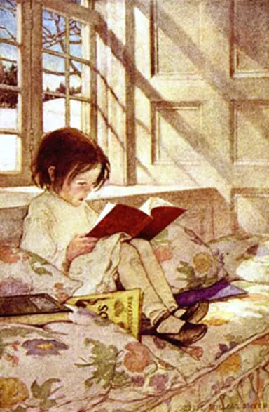
Explore creators in the Authors and Illustrators directories.
Diversity and Inclusion
Picturebooks about equality, children’s voices, inclusive communities and collective action across different experiences and identities.
Speak Up!
Nathan Bryon · Dapo Adeola
2023 · Puffin · United Kingdom · ISBN 9780241345870
A child finds ways to make her voice heard.

Last Stop on Market Street
Matt de la Peña (author) · Christian Robinson (illustrator)
2015 · G. P. Putnam’s Sons Books for Young Readers · United States
CJ and his grandmother ride a bus across the city, noticing people and places along the way.
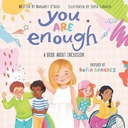
You Are Enough: A Book About Inclusion
Margaret O’Hair and Sofia Sanchez · Sofia Cardoso
· New York: Scholastic Inc. · United States
Children with different bodies, abilities and ways of participating appear together in an affirmation of belonging.
An illustrated celebration of belonging and difference.
Our Skin: A First Conversation About Race
Megan Madison and Jessica Ralli · illustrated by Isabel Roxas
2021 · Rise x Penguin Workshop · United States · ISBN 9780593519394 (hardcover)
An accessible introduction to skin colour, race and fairness, inviting children and adults to discuss discrimination.

Something Else
Kathryn Cave · illustrated by Chris Riddell
2011 edition · Puffin · United Kingdom
A creature who is excluded for being different must decide how to respond when a stranger comes to the door. This story opens up a discussion about who gets to decide what counts as belonging.
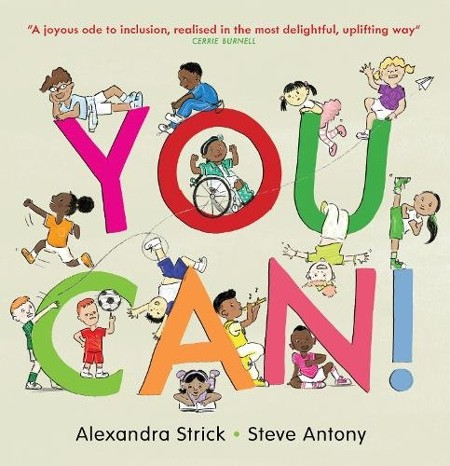
You Can!
Alexandra Strick · Steve Antony
2021 · Otter-Barry Books · United Kingdom
Follow the same children across life stages and look for the visual stories that run alongside the text.

We Can! Make a Difference
Alexandra Strick · Steve Antony
2024 · Otter-Barry Books · United Kingdom · ISBN 9781915659309
A child-led festival makes room for accessible play and collective action.
Disability
These books explore disabled childhoods, accessibility and participation. For picturebooks exploring related experiences, see the Neurodivergence and Mental health sections below.
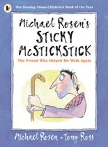
Michael Rosen’s Sticky McStickstick: The Friend Who Helped Me Walk Again
Michael Rosen · Illustrated by Tony Ross
· Walker Books · United Kingdom · ISBN 9781529503241
Rosen recounts learning to walk again after serious illness, with help from his care team and a walking stick.
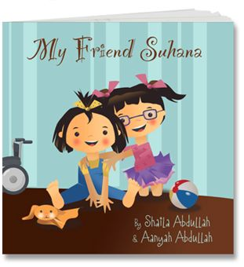
My Friend Suhana
Shaila Abdullah and Aanyah Abdullah
· Loving Healing Press · United States · ISBN 9781615992119
A girl befriends Suhana, who has cerebral palsy. She shares her drawings with Suhana and learns to pay attention to how her friend responds.
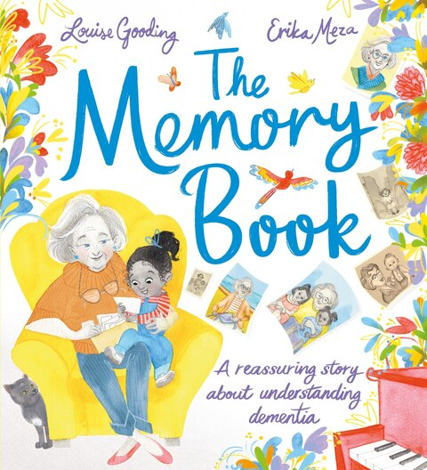
The Memory Book
Louise Gooding · illustrated by Erika Meza
· Wren & Rook · United Kingdom · ISBN 9781526363763
When her grandmother starts to forget the people in their family photos, a girl learns about dementia and finds ways to keep sharing time with her.
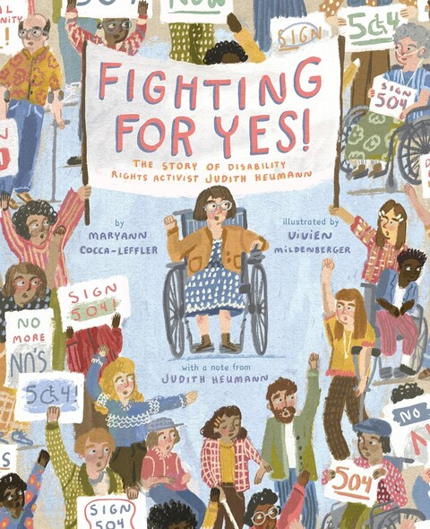
Fighting for YES! The Story of Disability Rights Activist Judith Heumann
Maryann Cocca-Leffler · illustrated by Vivien Mildenberger
· Abrams Books for Young Readers · United States · ISBN 9781419755606
A picturebook biography of Judith Heumann that follows her disability rights activism, including her role in organising the 1977 Section 504 sit-in.
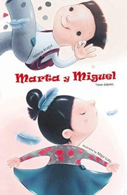
Marta y Miguel tienen diabetes
Helena Kraljič · Maja Lubi
2019 · Ediciones Jaguar · Spain · ISBN 9788416082162
Spanish-language picturebook about diabetes; a chronic health condition, not neurodivergence.
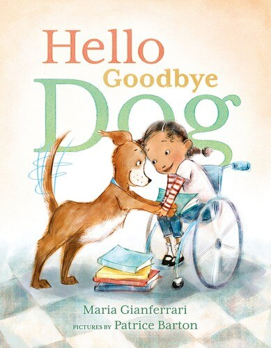
Hello Goodbye Dog
Maria Gianferrari · illustrated by Patrice Barton
· Roaring Brook Press · United States · ISBN 9781626721777
Moose keeps finding his way back to Zara at school. Training offers them a way to spend their school days together.
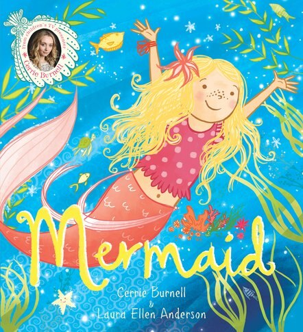
Mermaid
Cerrie Burnell · illustrated by Laura Ellen Anderson
· Scholastic · United Kingdom · ISBN 9781407145938
Sylvia, a wheelchair user and skilled swimmer, teaches Luka to swim. He imagines the two friends exploring a mermaid palace beneath the waves.
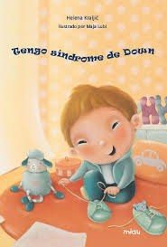
Tengo síndrome de Down
Helena Kraljič · Maja Lubi
2014 · Ediciones Jaguar · Spain · ISBN 9788416082728
Spanish-language picturebook about Down syndrome.

What Happened to You?
James Catchpole · Karen George
· London: Faber & Faber · United Kingdom
A child with one leg wants to play while other children ask about his body.

My City Speaks
Darren Lebeuf · Ashley Barron
· Toronto, Ontario: Kids Can Press · Canada
A girl who is visually impaired explores the city through sound, touch and movement.

My Three Best Friends and Me, Zulay
Cari Best · Vanessa Brantley-Newton
· New York: Margaret Ferguson Books / Farrar, Straus and Giroux · United States
Zulay prepares to run in her school’s field day.
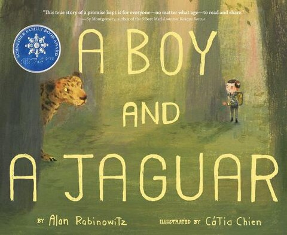
A Boy and a Jaguar
Alan Rabinowitz · illustrated by Cátia Chien
· Houghton Mifflin Harcourt · United States · ISBN 9780547875071
As a child who stutters, Alan feels at ease talking to animals. His bond with a jaguar at the zoo helps shape his later work protecting wild cats.

Susan Laughs
Jeanne Willis · Tony Ross
paperback edition · Andersen Press · United Kingdom · ISBN 9781842709900 (first published 1999)
Everyday scenes introduce Susan before the final image reveals her wheelchair.

We Move Together
Kelly Fritsch and Anne McGuire · Eduardo Trejos
· Chico, California: AK Press · United States
A story about access, solidarity and finding ways to move together.
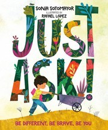
Just Ask! Be Different, Be Brave, Be You
Sonia Sotomayor · Rafael López
· New York: Philomel Books · United States
Children introduce different ways of experiencing and participating in the world.

Amazing
Steve Antony
· London: Hodder Children’s Books · United Kingdom
A wheelchair user and his pet dragon have adventures together in a story where disability is part of everyday life.
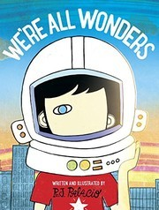
We’re All Wonders
R. J. Palacio
· New York: Alfred A. Knopf · United States
Auggie narrates what it feels like to be stared at and invites readers to consider how they see others.
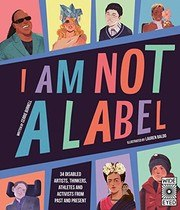
I Am Not a Label: 34 Disabled Artists, Thinkers, Athletes and Activists from Past and Present
Cerrie Burnell · Lauren Mark Baldo
· Wide Eyed Editions · United Kingdom
An illustrated collection that gives readers several different starting points for exploring disabled lives and achievements.

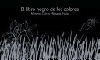
The Black Book of Colors
Menena Cottin · illustrated by Rosana Faría
Raised illustrations and braille invite readers to explore how colour can be described through touch and other senses.
2008 · English edition · Groundwood Books · Mexico
2006 · Spanish original · Ediciones Tecolote
English translation by Elisa Amado. Book details

Elephant Man
Written by Mariangela Di Fiore; illustrated by Hilde Hodnefjeld; translated into English by Rosie Hedger
· Annick Press · Norway · English hardcover edition · ISBN 9781554517787
A translated picturebook biography of Joseph Merrick, exploring the gaze and treatment he encountered.
English translation of Elefantmannen, a personal favourite.
Book details My article on Elefantmannen
A Sky-Blue Bench
Bahram Rahman; illustrated by Peggy Collins
2021 · Pajama Press · Canada · ISBN 9781772782226
In Afghanistan, Aria sets out to make a bench that will let her sit comfortably in school with her prosthetic leg.

Max the Champion
Written by Sean Stockdale and Alex Strick; illustrated by Ros Asquith
· Frances Lincoln Children’s Books (Quarto) · United Kingdom · UK paperback · ISBN 9781847805195 · 32 pages
Max imagines sporting glory throughout an ordinary school day. Illustrations show disabled and non-disabled children playing together.
Book details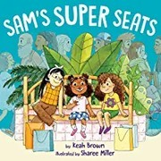
Sam’s Super Seats
Keah Brown · Sharee Miller
2022 · Kokila · United States · ISBN 9780593323892
Sam, who has cerebral palsy, goes shopping with her friends. When she gets tired, she thinks about where she can rest and how public seating could work better for her.

You’re SO Amazing!
James Catchpole and Lucy Catchpole · Karen George
2023 · Faber · United Kingdom
Joe questions why everyday play attracts praise simply because he is disabled. Read alongside What Happened to You?

The Blind Fairy: A Tale
Brigitte Schär · illustrated by Julia Gukova
1998 · North-South Books · Switzerland · ISBN 1558589708
An illustrated fairy tale in which a fairy regains her sight.

Elefantmannen
Mariangela Di Fiore · Hilde Hodnefjeld
Norwegian original · 2013 · Cappelen Damm · Norway
Language of this edition: Norwegian
A picturebook biography of Joseph Merrick that attends to how he is looked at and treated by others.
A personal favourite. English translation: Elephant Man
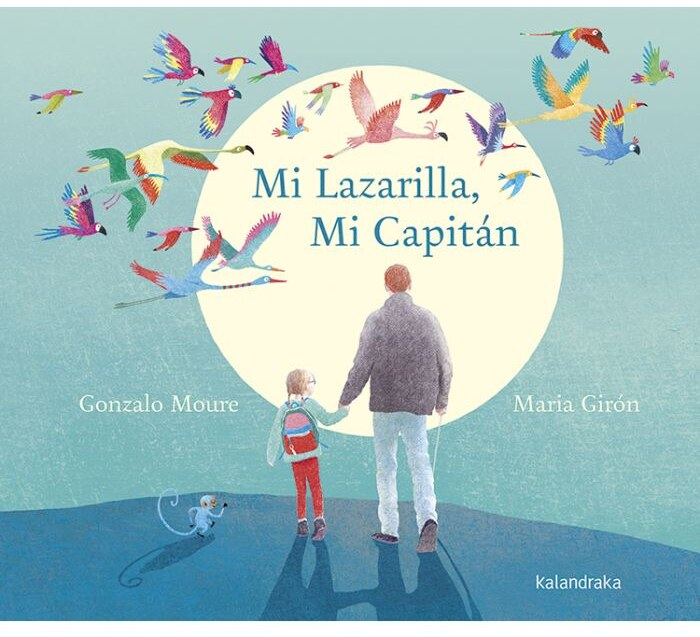
Mi lazarilla, mi capitán
Gonzalo Moure; illustrated by Maria Girón
Spanish · 2020 · Kalandraka · Spain · ISBN 9788413430317
Language of this edition: Spanish
A father and daughter navigate the city through sound and imagination. Traditional Chinese edition: 即使看不見，我們還是牽著手穩穩走 (ISBN 9789869990585).
Book details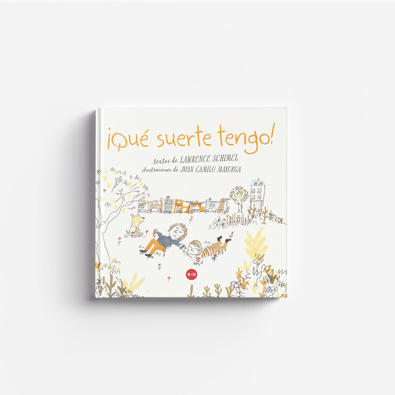
¡Qué suerte tengo!
Lawrence Schimel; illustrated by Juan Camilo Mayorga
2018 · Rey Naranjo Editores · Colombia · Spanish-language hardback · ISBN 9789585622517 · 32 pages · 22 × 22 cm
Language of this edition: Spanish
A boy reflects on everyday moments with his brother José and what makes their relationship special.
Book details
Cierra los ojos
Victoria Pérez Escrivá · illustrated by Claudia Ranucci
Spanish · 2020 edition · Thule Ediciones · Spain · ISBN 9788416817764
Language of this edition: Spanish
Two brothers describe the same world in different ways.
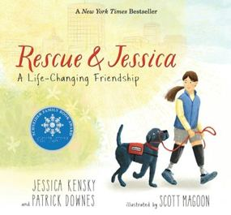
Rescue & Jessica: A Life-Changing Friendship
Jessica Kensky and Patrick Downes · Scott Magoon
· Candlewick Press · United States · hardcover · ISBN 9780763696047
A girl adapting to life as a double amputee develops a working partnership with a service dog.

I Talk Like a River
Jordan Scott · Sydney Smith
2022 · Walker Books · United States · ISBN 9781529502817
A boy who stutters finds a different way to understand his speech during a visit to a river with his father.
Story / creator connection: Canada
Schneider Family Book Award 2021

A Little Like Magic
Sarah Kurpiel
2024 · Penguin Young Readers Group · United States · ISBN 9780593697658
A wheelchair-using child visits an ice-sculpture festival, uncertain about the unfamiliar experience, then returns to search for a lost figurine.
Schneider Family Book Award 2025
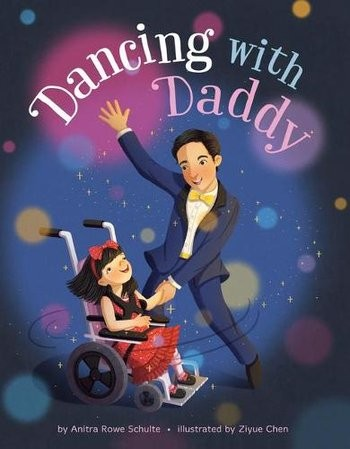
Dancing with Daddy
Anitra Rowe Schulte · Ziyue Chen
2021 · Amazon Publishing · United States · ISBN 9781542007191
Elsie prepares for a dance with her father, with communication and mobility supports forming part of ordinary family life.
Dolly Gray Picture Book Award 2022
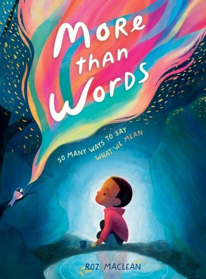
More Than Words: So Many Ways to Say What We Mean
Roz Maclean
2023 · Holt & Company, Henry · United States · ISBN 9781250864505
Nathan notices classmates communicating through speech, signs, movement and different tools.
IBBY Outstanding selection 2025
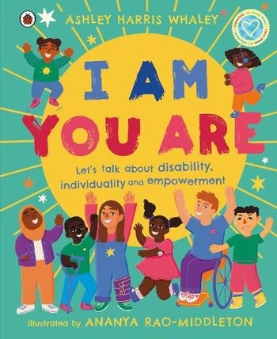
I Am, You Are
Ashley Harris Whaley · Ananya Rao-Middleton and Hannah Wood
2022 · Penguin Books, Limited · United Kingdom · ISBN 9780241573112
An illustrated introduction presents disabled children’s identities, everyday experiences and access needs.
IBBY Outstanding selection 2025

Splash
Claire Cashmore · illustrated by Sharon Davey
2021 · Farshore · United Kingdom
Inspired by the Paralympic swimmer’s childhood, this story follows a girl who is unsure about getting into the pool. Look at the choices and encouragement that help her join in at her own pace.

Stephen Hawking (Little Guides to Great Lives)
Isabel Thomas · illustrated by Marianna Madriz
2019 · Laurence King Publishing · United Kingdom
This short illustrated biography traces Hawking’s life and scientific work. Look at how the drawings explain his ideas and show the tools he used to communicate.

Six Dots: A Story of Young Louis Braille
Jen Bryant · Boris Kulikov
2016 · Knopf Books for Young Readers · United States · ISBN 9780449813379
An illustrated biography follows Louis Braille’s search for a reading and writing system he could use independently.
Schneider Family Book Award 2017 IBBY Outstanding selection 2019

Itzhak: A Boy Who Loved the Violin
Tracy Newman · Abigail Halpin
2020 · Abrams, Inc. · United States · ISBN 9781419741104
A picturebook biography follows Itzhak Perlman’s childhood relationship with the violin.

Frida Kahlo (Little Guides to Great Lives)
Isabel Thomas · illustrated by Marianna Madriz
2018 · Laurence King Publishing · United Kingdom
This illustrated biography introduces Kahlo’s life and art.

Piano Starts Here: The Young Art Tatum
Robert Andrew Parker
2016 paperback · Dragonfly Books · United States
The young jazz pianist Art Tatum describes music and the world around him.
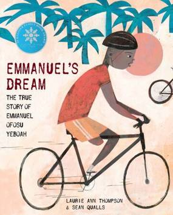
Emmanuel’s Dream: The True Story of Emmanuel Ofosu Yeboah
Laurie Ann Thompson · illustrated by Sean Qualls
· Schwartz & Wade / Anne Schwartz Books · United States · hardcover · ISBN 9780449817445
Emmanuel cycles across Ghana to challenge public attitudes to disability. Ask whose attitudes change and what makes that change possible.

Silent Days, Silent Dreams
Allen Say
2017 · Scholastic, Incorporated · United States · ISBN 9780545927611
Say imagines scenes from the life of artist James Castle, who was deaf and worked outside formal art training.
Schneider Family Book Award 2018

All the Way to the Top: How One Girl’s Fight for Americans with Disabilities Changed Everything
Annette Bay Pimentel · Nabi H. Ali
2020 · Sourcebooks Explore · United States · ISBN 9781492688976
Jennifer Keelan’s participation in disability-rights activism gives a child’s viewpoint on the struggle for the Americans with Disabilities Act.
Schneider Family Book Award 2021

Borka: The Adventures of a Goose with No Feathers
First published 1963 · Jonathan Cape · United Kingdom
A featherless goose struggles with expectations she cannot meet and finds help beyond her flock.
Neurodivergence
Read about autistic and ADHD experiences, different ways of communicating and learning, and how sensory environments shape everyday life. Some books depict sensory experiences without naming a diagnosis.
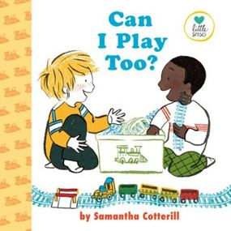
Can I Play Too?
2020 · Dial Books · United States
A child navigates social play and sensory needs.
- Cover unavailable

My Brain Is a Race Car
Written and illustrated by Nell Harris
· Nell Harris · ISBN 9780645976311
A racetrack metaphor gives children a way to talk about fast-moving thoughts, unfinished tasks and the need for a pause.
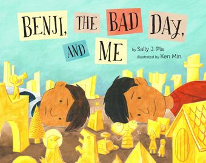
Benji, the Bad Day, and Me
Sally J. Pla · Illustrated by Ken Min
· Lee & Low Books · United States · ISBN 9781620143452
After a difficult day at school, Sammy feels overlooked at home. His autistic brother Benji recognises how he feels and offers him the kind of comfort he knows himself.

My Amazing ADHD Brain
Emily Snape (author-illustrator)
2024 · Summersdale / Vie · United Kingdom · Paperback · ISBN 9781837991266
Emily Snape’s illustrated introduction to ADHD uses the cheerful monster Pip to explore attention, energy, self-understanding and strategies for everyday situations.

My Amazing Autistic Brain
Emily Snape (author-illustrator)
2026 · Summersdale / Vie · United Kingdom · Paperback · ISBN 9781837998777
A picture-led introduction to different autistic experiences, featuring a cast of distinctive illustrated characters.
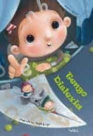
Tengo dislexia
Helena Kraljič · Maja Lubi
2015 · Ediciones Jaguar · Spain · ISBN 9788416434053
Spanish-language picturebook about dyslexia.
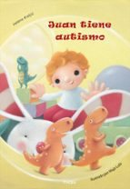
Juan tiene autismo
Helena Kraljič · Maja Lubi
2016 · Ediciones Jaguar · Spain · ISBN 9788416434251
Spanish-language picturebook about autism.
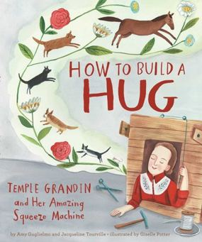
How to Build a Hug: Temple Grandin and Her Amazing Squeeze Machine
Amy Guglielmo and Jacqueline Tourville · illustrated by Giselle Potter
2018 · Atheneum Books for Young Readers · United States · ISBN 9781534410978
Temple Grandin’s development of a squeeze machine and her sensory experiences.

A Friend for Henry
· San Francisco, California: Chronicle Books · United States
A classroom friendship told from the perspective of an autistic child.

A Day with No Words
Tiffany Hammond · Kate Cosgrove
· New Egypt, New Jersey: Wheat Penny Press · United States
A family’s day out centres communication through an AAC device.
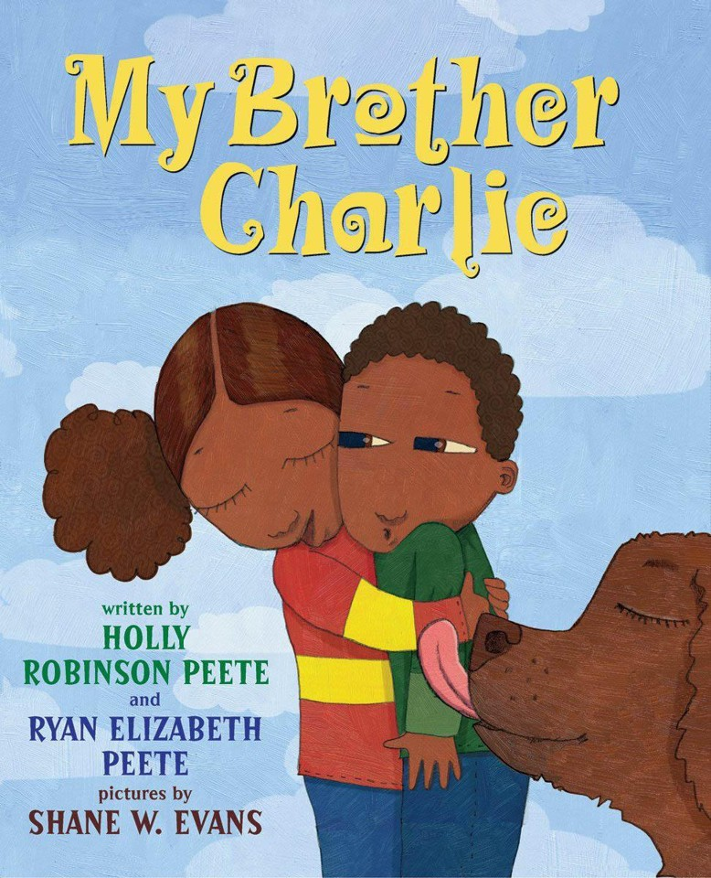
My Brother Charlie
Holly Robinson Peete and Ryan Elizabeth Peete · Shane W. Evans
· New York: Scholastic Press · United States
A sister describes her relationship with her autistic twin brother.

The Girl Who Thought in Pictures: The Story of Dr. Temple Grandin
Julia Finley Mosca · Daniel Rieley
· Seattle, Washington: The Innovation Press · United States
An illustrated biography introducing Temple Grandin and her visual way of thinking.

The Abilities in Me: Autism
Gemma Keir · Adam Walker-Parker
· Independently published · United Kingdom
A starting point for talking about autism and individual differences.

A Walk in the Words
Written and illustrated by Hudson Talbott
· Nancy Paulsen Books · United States · hardcover · ISBN 9780399548710
An autobiographical picturebook that uses changing typography to convey the experience of learning to read at one’s own pace.
Book details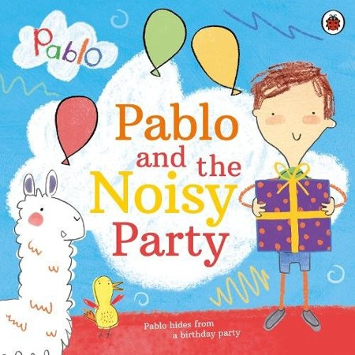
Pablo and the Noisy Party
Andrew Brenner and Sumita Majumdar
2020 · Ladybird · United Kingdom
Pablo and his imagined companions find ways to respond when a party becomes too loud.
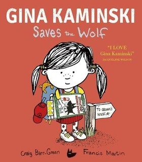
Gina Kaminski Saves the Wolf
Craig Barr-Green · Francis Martin
2023 · Little Tiger · United Kingdom
An autistic child rewrites Little Red Riding Hood, using the picturebook to question who decides how a familiar tale ends.
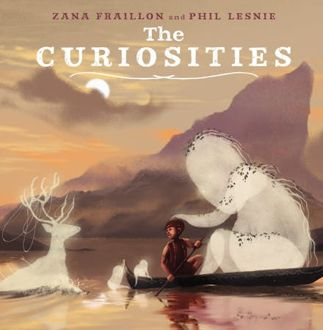
The Curiosities
Zana Fraillon · Illustrated by Phil Lesnie
· Lothian Children’s Books (Hachette Australia) · Australia · ISBN 9780734417848
When mysterious creatures settle on Miro, they draw his attention to things others miss and sometimes leave him feeling overwhelmed or alone. Inspired by lived experience of Tourette syndrome, the story follows Miro as he discovers others who experience the world in similar ways.
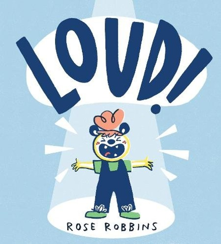
Loud!
2021 · Scallywag Press · United Kingdom
Abigail’s restlessness takes on a new meaning when her teacher notices her talent for making music. BookTrust identifies ADHD as implied.
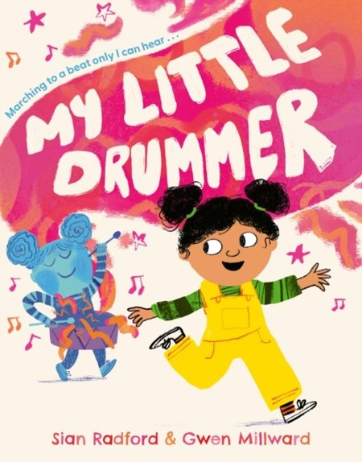
My Little Drummer
Sian Radford · Gwen Millward
2026 · Farshore · United Kingdom
Rhyming language gives readers a way to hear and discuss one child’s everyday experience of ADHD.

L’Île de Victor
Marie Sellier; illustrated by Catherine Louis
French · 2020 · Éditions LEP · Switzerland · ISBN 9782606017194
Language of this edition: French
Study how the sparse cover and use of negative space set the tone before the story begins.
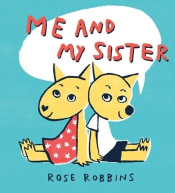
Me and My Sister
First published 2019 · Listed edition: ISBN 9781912650231 · United Kingdom · Scallywag Press Ltd
A brother describes everyday life with his autistic sister, including disagreements, sensory differences and shared pleasures.

Henry, Like Always
2023 · Chronicle Books · United States · ISBN 9781797213897
A change to the classroom routine unsettles Henry as his class prepares a parade.
Illustrated early reader
Schneider Family Book Award 2024
Scarlet Ibis
Gill Lewis
· Oxford University Press · United Kingdom · UK paperback ISBN 9780192793560
Scarlet struggles to reunite with her autistic younger brother Red after they are placed in separate foster homes.
Children's novel (not a picturebook)

Bat and the Business of Ferrets
Elana K. Arnold · Charles Santoso
2025 · Walden Pond Press · United States · ISBN 9780063385153
Bat’s interest in animals continues in an illustrated chapter-book story involving ferrets.
Illustrated chapter book
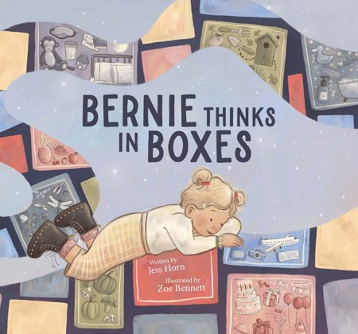
Bernie Thinks in Boxes
Jess Horn · Zoe Bennett
2024 · Affirm Press · Australia · ISBN 9781922930033
Bernie organises experiences into boxes and encounters a situation that does not fit her familiar system.
Story / creator connection: Australia
Dolly Gray Picture Book Award 2026

Wiggling Words
Kate Rolfe
2026 · Macmillan Children’s Books · United Kingdom · ISBN 9781035019601
Words become a visual playground for exploring dyslexia, creativity and the effort of reading.
Carnegie Medal for Illustration 2026

Bear Shaped
Dawn Coulter-Cruttenden
2020 · Oxford University Press · United Kingdom
When Jack loses his beloved bear, the search brings help from strangers. Look at how the pictures make the bear’s familiar presence and sudden absence felt.

Leo and the Octopus
Isabelle Marinov · illustrated by Chris Nixon
2021 · Templar Books · United Kingdom
Leo finds a connection with Maya, an octopus at the aquarium.

The Boy Who Loves to Lick the Wind
Fiona Carswell · illustrated by Yu Rong
2024 · Otter-Barry Books · United Kingdom
At the seaside, two boys discover a shared pleasure in licking the wind. Talk about how curiosity about someone else’s experience can begin a friendship.

Remarkable Remy
Melanie Heyworth · illustrated by Nathaniel Eckstrom
2023 · Hardie Grant Children’s Publishing (Bright Light) · Australia · hardback · ISBN 9781761210372
A child describes what makes their autistic friend Remy remarkable. Ask what the friend’s viewpoint lets readers see about Remy’s interests and ways of experiencing the world.

Through the Eyes of Me
Jon Roberts · illustrated by Hannah Rounding
2017 · Graffeg · United Kingdom
Four-year-old Kya shares the things she enjoys and the things she finds difficult.

Talking Is Not My Thing
2021 paperback · Scallywag Press · United Kingdom
A non-verbal girl narrates an evening with her brother and grandmother. Follow how the illustrations and different kinds of speech bubbles show what she thinks and how she communicates.

Back to Front and Upside Down!
Claire Alexander
2012 · Eerdmans Books for Young Readers · United States
Stan struggles to write a message on a birthday card. Look at what changes when he feels able to ask for help.
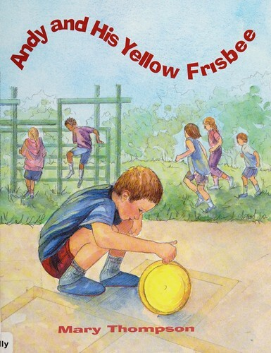
Andy and His Yellow Frisbee
Mary Thompson (author and illustrator)
· Woodbine House · United States · ISBN 9780933149830
A new pupil is curious about why Andy, an autistic boy, spins his yellow Frisbee at breaktime. Andy’s sister watches as she approaches him.
Sensory experiences and preferences
Different experiences of noise, touch, movement and crowded places. These stories invite conversation about individual preferences and adjustments; a strategy that helps one character may not suit another reader.
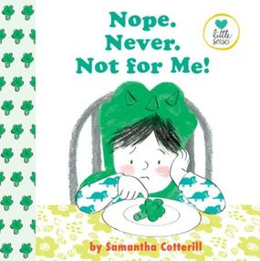
Nope. Never. Not for Me!
2019 · Dial Books · United States
A child cautiously explores unfamiliar foods.

We All Play
Julie Flett (author-illustrator)
2024 · Greystone Books · Canada
Children and animals move, rest and play across a series of scenes.

Whatever the Weather: Rain
2014 · Child’s Play · United Kingdom · ISBN 9781846436833
A board book about the sensations and movement of playing out in the rain.

Quiet Karima
· Viking Books for Young Readers · United States · ISBN 9780593205099
Karima listens closely to the sounds around her and discovers how silence and sound work together in music.

I Am Wriggly
Michael Rosen · Illustrated by Robert Starling
· Walker Books · United Kingdom · ISBN 9781529517057
A rabbit describes the many ways its body wants to move, even when it is time to settle down.
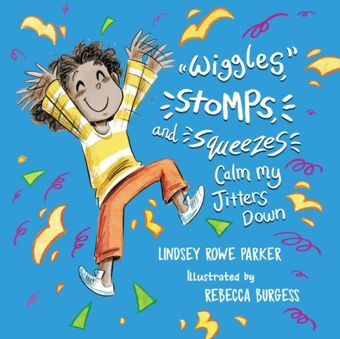
Wiggles, Stomps, and Squeezes Calm My Jitters Down
Lindsey Rowe Parker · Illustrated by Rebecca Burgess
· BQB Publishing · United States · ISBN 9781952782688
A child describes how movement, sound and touch feel throughout the day. Repeated phrases and expressive illustrations convey sensations that can be soothing or overwhelming.
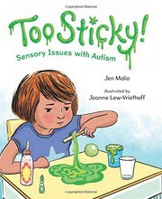
Too Sticky! Sensory Issues with Autism
Jen Malia · Joanne Lew-Vriethoff
· Albert Whitman & Company · United States
A child navigates the sensory demands of a classroom slime experiment.

This Beach Is Loud!
· New York: Dial Books for Young Readers · United States
A beach trip shows how noise and other sensory experiences can become overwhelming.

Too Much! An Overwhelming Day
Jolene Gutiérrez · Angel Chang
· New York · United States · Abrams Appleseed · ISBN 9781419764264
Colour and rhythm convey a child's experience of sensory overload and finding a quieter space.
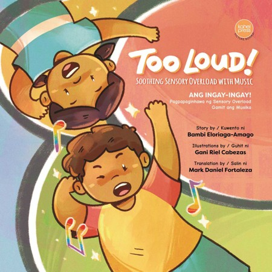
Too Loud! Soothing Sensory Overload with Music
Bambi Eloriaga-Amago · Gani Riel Cabezas
2023 · Matthew’s Publishing · Philippines · ISBN 9789716254990
Elmo finds everyday sounds overwhelming and discovers how music helps him navigate sensory overload.
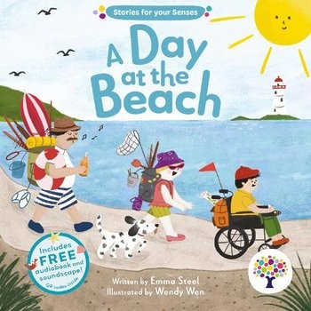
A Day at the Beach
Every Cherry Publishing
2024 · Sweet Cherry Publishing · United Kingdom · ISBN 9781802634877
A sensory board book exploring a day at the beach, accompanied by optional soundscapes.
Access features: Sensory board book; optional soundscapes
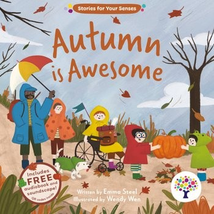
Autumn Is Awesome
Every Cherry Publishing
2024 · Sweet Cherry Publishing · United Kingdom · ISBN 9781802634938
A sensory board book introducing autumn through seasonal sights, sounds and experiences.
Access features: Sensory board book; optional soundscapes
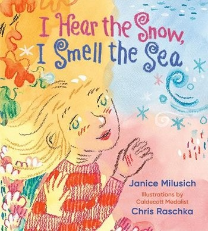
I Hear the Snow, I Smell the Sea
Janice Milusich · Chris Raschka
2025 · Random House Children's Books · United States · ISBN 9780593308172
A blind child experiences the changing year through sound, smell, touch and movement.
Schneider Family Book Award 2026
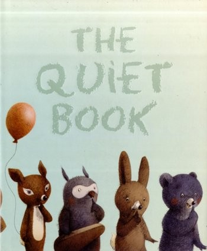
The Quiet Book
Deborah Underwood · Renata Liwska
2010 · Houghton Mifflin Books for Children · United States · ISBN 9780547215679
Different kinds of quiet range from anticipation to comfort and uncertainty.
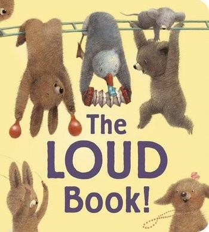
The Loud Book!
Deborah Underwood · Renata Liwska
2011 · Houghton Mifflin Harcourt Publishing Company · United States · ISBN 9780544430648
Familiar noises become a sequence of comic and recognisable situations.
Mental Health
These books give children and adults ways to talk about mental health, including depression and bipolar disorder. Read together when the subject is close to a child’s own experience.
A Blue Kind of Day
Rachel Tomlinson · illustrated by Tori-Jay Mordey
· New York: Kokila · United States · hardback · ISBN 9780593324011
When Coen is having a difficult day, his family learns to give him time and listen. The story explores how childhood depression can feel in the body.

Up and Down Mum
Illustrated by Summer Macon
· Child’s Play · United Kingdom · paperback · ISBN 9781786283399
A child narrates life with a mother who has bipolar disorder, using a roller-coaster comparison to convey shifts in energy and mood.
Book details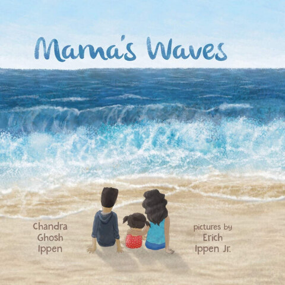
Mama’s Waves
Chandra Ghosh Ippen · illustrated by Erich Ippen Jr.
· Piplo Productions · United States · ISBN 9781950168101
Ellie misses her mother and has questions about her changing moods. Her family uses the image of waves to talk through those feelings and remember good times together.
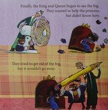
The Princess and the Fog: A Story for Children with Depression
Anthony Lloyd Jones
2015 · Jessica Kingsley Publishers · United Kingdom · ISBN 9781849056557
A fog interrupts a young princess’s everyday life. The publisher recommends ages 5–7.
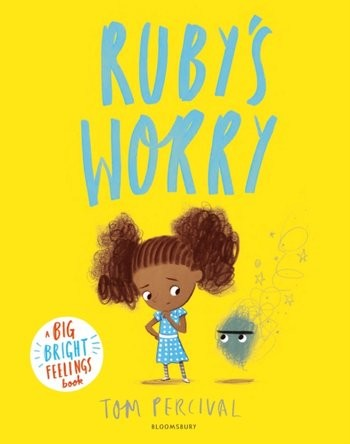
Ruby’s Worry
First published 2018 · Listed edition: ISBN 9781408892152 · United Kingdom
Ruby notices a worry that follows her and grows as she tries to hide it.
The Huge Bag of Worries
Virginia Ironside · Frank Rodgers
2011 · Hodder Children’s Books · United Kingdom · paperback · ISBN 9780340903179
Jenny carries a growing bag of worries that other people do not seem to understand.

In the Blue
Erin Hourigan
2022 · Little Brown & Company · United States · ISBN 9780316497626
Colour gives a child a way to understand a father’s depression and its effect on family life.
Schneider Family Book Award 2023
Waking Ben Doldrums
Heather Smith · Byron Eggenschwiler
2023 · Orca Book Publishers USA · Canada · ISBN 9781459833913
Frida encounters a neighbour whose withdrawal unsettles the routines of their apartment building.
Story / creator connection: Canada
IBBY Outstanding selection 2025

Deaf and hard-of-hearing experiences
Picturebooks featuring deaf and hard-of-hearing characters, Deaf history and sign language. Signed languages vary by country, so check which language an edition depicts.
Boy
Phil Cummings · illustrated by Shane Devries
· Scholastic Canada · Australia · ISBN 9781443182164
A deaf boy notices the fear behind a battle between a king and a dragon. He offers both sides a way to understand each other.

The Visible Sounds
Yin Jianling (author) · Yu Rong (illustrator)
2021 · UCLan Publishing · United Kingdom
A girl experiences sound differently after losing her hearing.
Can Bears Ski?
Raymond Antrobus · Polly Dunbar
· Somerville, Massachusetts: Candlewick Press · United Kingdom
A young bear makes sense of sounds, hearing loss and new ways to communicate.
Silent Star: The Story of Deaf Major Leaguer William Hoy
Bill Wise · illustrated by Adam Gustavson
· Lee & Low Books · United States · ISBN 9781620148082
A picturebook biography of William Hoy, a deaf baseball player whose speed and skill helped him build a career in the major leagues.

Moses Goes to a Concert
Isaac Millman
· New York: Farrar, Straus and Giroux · United States
A Deaf class meets a Deaf percussionist. The book includes American Sign Language (ASL).

Listen: How Evelyn Glennie, a Deaf Girl, Changed Percussion
Shannon Stocker · Devon Holzwarth
· New York: Dial Books for Young Readers · United States
A picturebook biography follows Evelyn Glennie’s developing relationship with sound and percussion.
A picturebook biography of Scottish percussionist Evelyn Glennie.

The Sound of All Things
Myron Uhlberg · Ted Papoulas
· Atlanta, Georgia: Peachtree Publishers · United States
A hearing child and his Deaf parents share an outing at Coney Island.

The William Hoy Story: How a Deaf Baseball Player Changed the Game
Written by Nancy Churnin; illustrated by Jez Tuya
· Albert Whitman & Company · United States · ISBN 9780807591925
A picturebook biography of the Deaf baseball player William Hoy.

Freddie and the Fairy
Written by Julia Donaldson; illustrated by Karen George
· London: Macmillan Children’s Books · United Kingdom · ISBN 9780330511186
A wish-granting fairy who is hard of hearing prompts Freddie to rethink how he communicates.

Dad, Jackie, and Me
Myron Uhlberg · Colin Bootman
· Atlanta, Georgia: Peachtree Publishers · United States
A hearing boy and his Deaf father bond over baseball and Jackie Robinson.

The Printer
Myron Uhlberg · Henri Sørensen
· Atlanta, Georgia: Peachtree Publishers · United States
A Deaf printer uses sign to warn colleagues about a fire.

Moonbird
Joyce Dunbar · Jane Ray
· London: Doubleday · United Kingdom
A deaf prince encounters a bird that helps him and those around him discover different ways to communicate.

Sound Switch Wonder
Christine J. Ko and Owen Whang · Katie Crumpton
· West Margin Press · United States
A deaf child and his mother share what listening with cochlear implants can feel like.

Dachy’s Deaf
Jack Hughes
· London: Franklin Watts · United Kingdom
A young dinosaur wears a hearing aid and has an adventure with friends.

Moses Goes to School
Isaac Millman
· New York: Farrar, Straus and Giroux · United States
Moses’s school day unfolds through pictures, written English and examples of American Sign Language.

The Deaf Musicians
Pete Seeger and Paul DuBois Jacobs · R. Gregory Christie
· New York: G. P. Putnam’s Sons · United States
A jazz pianist who loses his hearing finds new collaborators through a sign language class.

My First Signs
Illustrated by Annie Kubler
Child’s Play · United Kingdom · 2004 · British Sign Language edition · ISBN 9781904550044
A board book featuring everyday BSL signs with drawings of babies using them in context.
Book details
El Deafo
Cece Bell
ABRAMS · United States · paperback (2014), 248 pages · ISBN 9781419712173
For inclusive reading conversations: a graphic memoir of hearing loss, school and friendship. This is the original paperback, rather than the expanded Superpowered Edition.

象脚鼓
殷健灵
· 天天出版社 (Daylight Publishing House) · China · Chinese · ISBN 9787501616039
Language of this edition: Chinese
A fictionalised account of deaf dancer Tai Lihua’s childhood: Dongyin discovers that she can feel music through vibrations in the floor and begins to dance.
Book detailsListening to the Quiet
Cassie Silva · Frances Ives
2024 · Lantana Publishing · United Kingdom · paperback · ISBN 9781836290216
Jacki and her mother find new ways to share experiences as her mother’s hearing changes.

Dancing Hands: A Story of Friendship in Filipino Sign Language
Joanna Que and Charina Marquez · Fran Alvarez · Karen Llagas (translator)
2023 · Chronicle Books LLC · Philippines · ISBN 9781797213323
Two children develop a friendship through Filipino Sign Language.
Edition language: English translation; Filipino Sign Language
Schneider Family Book Award 2024
Proud to Be Deaf: Discover My Community and My Language
Ava, Lilli and Nick Beese · Romina Martí · James Jordan
2019 · Hachette Children's Group · United Kingdom · ISBN 9781526302182
Ava introduces her interests, family and Deaf community through words, photographs and illustrations.
IBBY Outstanding selection 2019
Monster Hands
Karen Kane and Jonaz McMillan · Dion MBD
2024 · Penguin Young Readers Group · United States · ISBN 9780593532294
Two deaf friends use signed conversation and shadow play to address a night-time fear.
Schneider Family Book Award 2025

Yağmur Adam ve En Güzel Dans
Özge Bahar Sunar · illustrated by Uğur Altun
Turkish · 2019 · Redhouse Kidz · Türkiye · İstanbul · ISBN 9786052079539
Language of this edition: Turkish
A girl who is deaf experiences the rhythm of rain through movement and dance, prompting the Rain Man to reconsider his withdrawal.
Book details
Dad and Me in the Morning
Patricia Lakin · illustrated by Robert G. Steele
· Morton Grove, Illinois: Albert Whitman & Company · United States · hardback · ISBN 9780807514191
A deaf boy and his father walk to the beach before sunrise. Watercolours and the boy’s narration convey how they share the morning through signing, touch and attention to the world around them.
Chinese diasporic childhoods and cultural identity
A Gift for Popo
Katrina Liu · Illustrated by Heru Setiawan
· Lychee Press · United States · ISBN 9781953281401
Miles looks for a gift for his popo. Their everyday exchanges show how affection and family traditions are shared across generations in a Chinese American family.
Eyes That Kiss in the Corners
Joanna Ho · Dung Ho
· New York: Harper · United States
A girl sees a family resemblance across generations and learns to value it.
Watercress
Andrea Wang · illustrated by Jason Chin
· Neal Porter Books / Holiday House · United States · ISBN 9780823446247
A daughter feels embarrassed when her family stops to gather watercress by the roadside. Her mother’s memories of growing up in China change what the meal means to her.

Amy Wu and the Perfect Bao
Kat Zhang · Charlene Chua
· New York: Aladdin · United States
Making bao with family gives Amy room to learn by experimenting.
- Cover unavailable

The Shadow in the Moon: A Tale of the Mid-Autumn Festival
Christina Matula · illustrated by Pearl Law
· Charlesbridge · ISBN 9781580897464
Two sisters ask about the woman pictured on their mooncakes, prompting their grandmother to tell the story of Chang’e.

Dim Sum for Everyone!
· New York: Alfred A. Knopf · United States
A family shares small dishes at a dim sum restaurant, with details that invite children to talk about food and family routines.

The Truth About Dragons
Julie Leung · Hanna Cha
· New York: Henry Holt and Company · United States
Two grandmothers tell different dragon stories, both part of a child’s inheritance.

The Rice in the Pot Goes Round and Round
Wendy Wan-Long Shang · Lorian Tu
· New York: Orchard Books · United States
A cumulative rhyme follows a Chinese American family gathering around the dinner table.

A Big Mooncake for Little Star
· New York: Little, Brown and Company · United States
A playful story about the phases of the moon, inspired by the Mid-Autumn Festival.
Chinatown
· New York: Henry Holt and Company · United States
A child accompanies his grandmother through a neighbourhood shaped by Chinese migration.

Dim Sum Palace
X. Fang
· London: Pushkin Children’s Books · United States
A fantastical visit to a dim sum palace centres food, family and imagination.

Goldy Luck and the Three Pandas
Natasha Yim · Grace Zong
· Watertown, Massachusetts: Charlesbridge · United States
A Lunar New Year retelling of Goldilocks that makes room for repair and hospitality.

Bringing In the New Year
· New York: Alfred A. Knopf · United States
A Chinese American family prepares for Lunar New Year through shared household traditions.

I Dream of Popo
Livia Blackburne · Julia Kuo
· New York: Roaring Brook Press · United States
A child and her grandmother sustain a bond across the distance between Taiwan and the United States.
Year of the Cat
Richard Ho · Jocelyn Li Langrand
· New York: Greenwillow Books · United States
A retelling of the zodiac race that asks what happened to the cat.

Tofu Takes Time
Helen H. Wu · Julie Jarema
· Minneapolis, Minnesota: Beaming Books · United States
A girl learns patience as she and her grandmother make tofu together.

Kite Flying
· New York: Alfred A. Knopf · United States
A family makes and flies a dragon kite together.
Two New Years
Richard Ho · Lynn Scurfield
· San Francisco, California: Chronicle Books · United States
A Chinese Jewish family celebrates Lunar New Year and Rosh Hashanah.

Grandpa Grumps
Katrina Moore · Xindi Yan
· Little Bee Books · United States
Daisy tries to connect with her visiting grandfather across a language barrier.
My Day with Gong Gong
Sennah Yee · Elaine Chen
· Annick Press · Canada
A trip through Chinatown gives a child and her grandfather new ways to understand one another.

地下鐵 (The Sound of Colors)
2001 · 大塊文化 · Taiwan · Traditional Chinese · ISBN 9570316519
A journey through a city railway turns into a series of imagined scenes.

向左走．向右走 (Turn Left, Turn Right)
1999 · 格林文化 · Taiwan · Traditional Chinese · ISBN 9577452035
Parallel scenes follow two neighbours whose daily routes keep taking them in opposite directions.

The Ugly Vegetables
Grace Lin · Illustrated by Grace Lin
1999 · Charlesbridge Publishing · United States · Hardcover ISBN 9780881063363
A child envies neighbouring flower gardens before discovering what her mother’s vegetables contribute to a shared meal.

Powerful Like a Dragon
Christopher Cheng · Illustrated by Jacqueline Tam
2025 · Roaring Brook Press · United States · ISBN 9781250829399
Shu Lok is sent away from war with his cousins and draws strength from his parents’ words about dragons. The recurring dragon image connects courage, kindness and the experience of displacement.
Paper Son: The Inspiring Story of Tyrus Wong, Immigrant and Artist
Julie Leung · Illustrated by Chris Sasaki
2019 · Schwartz & Wade Books · United States · ISBN 9781524771874
The young Tyrus Wong leaves China for the United States and develops an artistic practice shaped by his experiences and Chinese painting traditions.
I Am Golden
Eva Chen · Illustrated by Sophie Diao
2022 · Feiwel & Friends · United States · ISBN 9781250842053
A family addresses Mei with affection, celebrating her Chinese American identity and the possibilities she carries.
Gender and sexuality
Discuss which expectations the stories challenge and what possibilities they offer their characters.
Stephanie’s Ponytail
Robert Munsch · Michael Martchenko
1996 · Annick Press · Canada
Stephanie tries distinctive hairstyles while her classmates copy her, inviting reflection on individuality and conformity.
Book detailsJulián at the Wedding
2020 · Candlewick Press · United States
Julián attends a wedding and makes a new friend.
My Shadow Is Purple
Written and illustrated by Scott Stuart
· Larrikin House · Australia · ISBN 9781922503817
At a school dance, a child with a purple shadow is asked to choose between groups with pink and blue shadows. The child’s response prompts classmates to show the other colours they identify with.
The Wishing Flower
A. J. Irving · illustrated by Kip Alizadeh
· New York: Knopf Books for Young Readers · United States · hardback · ISBN 9780593430446
Birdie finds companionship with a new classmate who shares her affection for books and nature. The illustrations convey the excitement of a first crush and the quiet pleasure of feeling understood.

Julián Is a Mermaid
· Somerville, Massachusetts: Candlewick Press · United States
Julián explores dress and self-expression with the support of his abuela.

When Aidan Became a Brother
Kyle Lukoff · Kaylani Juanita
· New York: Lee & Low Books · United States
A transgender boy thinks about how to welcome a new sibling.

And Tango Makes Three
Justin Richardson and Peter Parnell · Henry Cole
· New York: Simon & Schuster Books for Young Readers · United States
Two male penguins raise a chick together in a story based on real penguins.
Red: A Crayon’s Story
Michael Hall
· New York: Greenwillow Books · United States
A crayon labelled red discovers that it can draw in blue.

Prince & Knight
Daniel Haack · Stevie Lewis
· New York: Little Bee Books · United States
A fairy-tale romance between a prince and a knight.

My Rainbow
DeShanna Neal and Trinity Neal · Art Twink
· New York: Kokila · United States
A mother makes a wig that reflects her transgender daughter’s sense of herself.
Calvin
JR Ford and Vanessa Ford · Kayla Harren
· New York: G. P. Putnam’s Sons · United States
Calvin prepares to tell his family and school that he is a boy.

Uncle Bobby’s Wedding
Sarah S. Brannen · Lucia Soto
· London: Hodder Children’s Books · United States
A young girl wonders what her uncle’s marriage will mean for their relationship.

The Boy & the Bindi
Vivek Shraya · Rajni Perera
· Vancouver, British Columbia: Arsenal Pulp Press · Canada
A boy explores his curiosity about his mother’s bindi and what it means to wear one.

Love Makes a Family
Sophie Beer
· New York: Dial Books for Young Readers · Australia
A board book showing different families through everyday moments of care.
Bathe the Cat
Alice B. McGinty · David Roberts
· San Francisco, California: Chronicle Books · United States
A lively comedy about a family with two dads and a cat intent on avoiding bath time.

Neither
Airlie Anderson
· New York and Boston: Little, Brown and Company · United States
An imaginative story about belonging beyond a world organised around two categories.

Introducing Teddy: A Gentle Story About Gender and Friendship
Jessica Walton · Dougal MacPherson
· London: Bloomsbury · United Kingdom
A teddy bear shares her gender identity with a friend.

Worm Loves Worm
J. J. Austrian · Mike Curato
· New York: Balzer + Bray · United States
Two worms plan a wedding and question the roles their friends expect them to play.

Pink Is for Boys
Robb Pearlman · Eda Kaban
· Philadelphia, Pennsylvania: Running Press Kids · United States
Colour offers a simple way into a conversation about gender stereotypes.

My Shadow Is Pink
Scott Stuart
· Larrikin House · Australia
A child’s shadow becomes a visual way to explore gender expression and family support.

A House for Everyone: A Story to Help Children Learn about Gender Identity and Gender Expression
Jo Hirst · Naomi Bardoff
· London: Jessica Kingsley Publishers · Australia
Children build a playhouse together and introduce different ways of expressing who they are.
William’s Doll
Charlotte Zolotow · William Pène du Bois
1985 · Turtleback Books · United States
William wants a doll despite the adults and children who tell him it is the wrong toy for a boy. The story invites readers to question who gets to decide what caring play should look like.
The Paper Bag Princess
Robert Munsch · Michael Martchenko
1980 · Annick Press · Canada
Elizabeth sets out to rescue a prince after a dragon destroys her home. Her resourcefulness and the prince’s response turn the familiar rescue plot into a question about respect.

Me and My Dysphoria Monster
Laura Kate Dale; illustrated by Hui Qing Ang
2022 · Jessica Kingsley Publishers · United Kingdom · ISBN 9781839970931
Uses a monster as a visual metaphor to help young readers talk about gender dysphoria and the support a child can receive.
Book details
Mommy, Mama, and Me
Lesléa Newman · Carol Thompson
· Tricycle Press · United States · board book · ISBN 9781582462639
A toddler spends the day with two mums in a rhyming board book.

Daddy, Papa, and Me
Lesléa Newman · Carol Thompson
2009 · Tricycle Press · United States · ISBN 9781582462622
Rhythmic words and images follow a toddler and two dads through everyday play and care.
The Unboy Boy
Richa Jha · Gautam Benegal
First published in 2013 by Snuggle With Picture Books. · Listed edition: Pickle Yolk Books · India · ISBN 9789352678150
Gagan’s gentleness and interests are judged against other people’s ideas of how a boy should behave.
Story / creator connection: India
10,000 Dresses
Marcus Ewert · Rex Ray
2008 · Seven Stories Press · United States · ISBN 9781583228500
Bailey dreams of extraordinary dresses but receives repeated rejection when trying to describe them at home.
Piggybook
1986 · Julia MacRae Books · United Kingdom
A household takes a mother’s labour for granted until her absence makes that dependence impossible to ignore.

Bodies, consent and growing up
For books that centre gender identity, sexuality and families, see Gender and sexuality.
Little Passenger
Deirdre Sullivan · Illustrated by Jessica Love
· Candlewick Press · United States · ISBN 9781536242942
A mother speaks to her unborn child, imagining their growing connection and the day they will meet.
The Featherless Chicken
2006 · Heryin Books English edition · United States
A featherless chicken’s encounters invite discussion about appearance and acceptance.
Hug?
2020 · Kids Can Press · Canada
A playful picturebook about affection and boundaries.
Big
2023 · Little, Brown · United States
A child confronts the ways others judge her body.
Ten Little Fingers and Ten Little Toes
Mem Fox · Helen Oxenbury
2008 · Walker Books · United Kingdom
Babies from different places share playful similarities.
Everyone Poops
· Chronicle Books · United States · ISBN 9781797202648
Animals and people are shown going to the toilet in a matter-of-fact introduction to a bodily function.
All About You and Your Body
Felicity Brooks · Illustrated by Mar Ferrero
· Usborne · United Kingdom · ISBN 9781805312246
This illustrated introduction looks at how bodies differ, grow and change. It also introduces body autonomy and personal boundaries.
More and More Rabbits
Written and illustrated by Nicholas Allan
· Hutchinson · United Kingdom · ISBN 9780091893736
Every time Mr and Mrs Tail go to bed, more baby rabbits arrive. When their house fills up, the pair decide to try sleeping apart.
Your Body Is Awesome
Sigrún Daníelsdóttir · Illustrated by Björk Bjarkadóttir
· Singing Dragon · United Kingdom · ISBN 9781848192287
This illustrated book introduces young readers to body diversity. It looks at the ways bodies change and what they let us do, feel and experience.

Bodies Are Cool
Tyler Feder
2021 · Puffin · United States · ISBN 9780241519936
An illustrated celebration of varied body shapes, skin tones and ways of moving. For preschool and early primary read-alouds.

The Bare Naked Book
Kathy Stinson · Melissa Cho
2021 · Revised edition · Canada · Annick Press
Names body parts using everyday settings and diverse bodies. Includes straightforward illustrations of nudity. For preschool and early primary shared reading.
Yes! No!: A First Conversation About Consent
Megan Madison and Jessica Ralli · Isabel Roxas
2022 · Rise x Penguin Workshop · United States
A shared-reading prompt about permission and how to respond when someone says no. For preschool and early primary.

My Body! What I Say Goes!
Jayneen Sanders
2016 · Educate2Empower Publishing · Australia · 2nd ed.
A body-safety discussion book about personal boundaries and asking a trusted adult for help. For adult-guided early primary reading.

It’s So Amazing!: A Book about Eggs, Sperm, Birth, Babies, Gender, and Families
Robie H. Harris · Michael Emberley
2024 · Revised edition · United States · Candlewick Press · ISBN 9781536207231
Illustrated nonfiction for ages 7 and up. It covers anatomy, reproduction, gender and different ways families are formed, with diagrams and cartoons.

Don’t Hug Doug (He Doesn’t Like It)
Carrie Finison · illustrated by Daniel Wiseman
2021 · Ladybird · United Kingdom edition · ISBN 9780241527573
Doug prefers high fives to hugs. Humour and energetic pictures show that friendly intentions do not replace asking permission or respecting a person’s choice.

Every Body: A First Conversation About Bodies
Megan Madison and Jessica Ralli · illustrated by Tequitia Andrews
2023 · Rise x Penguin Workshop · United States · ISBN 9780593661505
An illustrated introduction to bodily diversity and unfair assumptions about appearance.
I’m Going to Make a Friend
Darren Chetty · illustrated by Sandhya Prabhat
2025 · Little Tiger · United Kingdom
A child sets out to build an ideal friend, but discovers that friendship develops through making and sharing together.
Colin and Lee: Carrot and Pea
Morag Hood
2016 · Two Hoots · United Kingdom
Two unlikely friends discover that their differences can make playing together more inventive.
Hello, Friend
Rebecca Cobb
2019 · Macmillan Children’s Books · United Kingdom
A child enthusiastically tries to make a new friend at school, while the pictures invite readers to consider the other child’s perspective.
The Boy Who Loved Everyone
Jane Porter · illustrated by Maisie Paradise Shearring
2019 · Walker Books · United Kingdom
Dimitri learns that people express affection in different ways, even when they do not say the same words.
I’m Sticking With You
Smriti Halls · illustrated by Steve Small
2020 · Simon & Schuster · United Kingdom
Bear and Squirrel negotiate closeness and personal space in a rhyming story about friendship.
Duck and Penguin Are Not Friends
Julia Woolf
2019 · David Fickling Books · United Kingdom
Two children expect their favourite toys to become friends, but Duck and Penguin have other ideas. Their reactions complicate assumptions about friendship.
Loss, grief and remembrance
Compare what an object, a shared activity or an illustration can hold on to after a loss.
Rebecca
Kate Beaton · Illustrated by Sydney Smith
· Roaring Brook Press · United States · ISBN 9781250349019
A young mother and her family face loss together and find moments of resilience and joy.

Where Are You, Eddie?
Michael Rosen · Illustrated by Gill Smith
· Walker Books · United Kingdom · ISBN 9781529522877
After Eddie dies, his father visits familiar places and talks with the people who knew him. Their memories show him how Eddie is still part of their lives.
- Cover unavailable

Death Is Stupid
Written and illustrated by Anastasia Higginbotham
· The Feminist Press · ISBN 9781558619258
After his grandmother dies, a child questions familiar words of consolation and finds his own way to remember her. Includes a wake and funeral.

Lovely Old Roly
Michael Rosen · Illustrated by Priscilla Lamont
· Frances Lincoln · United Kingdom · ISBN 9780711214880
When their old cat dies, the children and their family find ways to remember him.
The Garden of Hope
Isabel Otter · Illustrated by Katie Rewse
· Little Tiger · United Kingdom · ISBN 9781848577138
After losing her mother, Maya tends an overgrown garden that reminds her of their time together. As the garden changes, it becomes a place for remembering her mother and spending time with her father.
The Heavy Bag: One Girl’s Journey Through Grief
Sarah Surgey · illustrated by Larisa Ivankovic
· Cardinal Rule Press · United States · ISBN 9781945369414
After her grandfather dies, Enid carries a heavy bag of memories. Sharing her feelings and stories with others gradually lightens its weight.
Lost in the Clouds
Written and illustrated by Tom Tinn-Disbury
· Dorling Kindersley (DK) · United Kingdom · UK paperback ISBN 9780241488034
Billy imagines his late mother among the clouds; changing weather offers a visual language for grief, sadness and moments of comfort.
媽媽變成鬼了！：我要和媽媽結婚
信實 (Nobumi) · translated by 蘇懿禎
· 小熊出版 · Japan · ISBN 9789578640153
Language: Traditional Chinese translation
A young boy says he wants to marry his mother after his father dies. Through their conversations, he begins to talk about what his father meant to them.
活了100萬次的貓
佐野洋子 (Yōko Sano)
· 步步出版 · Japan · ISBN 9789869677813
Language: Traditional Chinese translation
A cat lives and dies many times without mourning anyone. After making a life with a white cat, he experiences grief for the first time.
媽媽變成鬼了！
信實 (Nobumi) · translated by 蘇懿禎
· 小熊出版 · Japan · ISBN 9789869330527
Language: Traditional Chinese translation
After his mother dies in a road accident, a young boy misses her. She returns home as a ghost and watches her family carry on with their routines.
可以哭，但不要太傷心
內田麟太郎 (Rintarō Uchida) · illustrated by 高巢和美 · translated by 思謐嘉
· 大好書屋 · Japan · ISBN 9789862485958
Language: Traditional Chinese translation
A grandfather who has died addresses his grandson, remembering their time together and imagining the life still ahead of him.
Michael Rosen’s Sad Book
· London: Walker Books · United Kingdom
Words and pictures make space for grief that can persist and change over time.

Grandad’s Island
Benji Davies
· London: Simon & Schuster Children’s Books · United Kingdom
An imaginative journey gives a child a way to say goodbye.
The Heart and the Bottle
· HarperCollins Children’s Books · United Kingdom · paperback · ISBN 9780007182343
A visual metaphor for withdrawing after loss and gradually opening up again.

The Goodbye Book
Todd Parr
· New York: Little, Brown and Company · United States
A small fish experiences the feelings that can follow a goodbye.

The Memory Box: A Book About Grief
Joanna Rowland · Thea Baker
· Minneapolis, Minnesota: Sparkhouse Family · United States
A child finds a tangible way to keep memories close.

Badger’s Parting Gifts
Susan Varley
· London: Andersen Press · United Kingdom
Friends remember Badger through the skills and experiences he shared with them.
Always and Forever
Alan Durant · Debi Gliori
· London: Picture Corgi · United Kingdom
Animal friends mourn Fox and find ways to remember their life together.

The Pond
Nicola Davies · Cathy Fisher
· Graffeg · United Kingdom
A family builds a pond after the death of a child’s father.

Ocean Meets Sky
Terry Fan and Eric Fan
· New York: Simon & Schuster Books for Young Readers · United States
A boy builds a boat to remember the grandfather who told him stories.

Ida, Always
Caron Levis · Charles Santoso
· New York: Atheneum Books for Young Readers · United States
Two polar bears face illness and death, with attention to the friendship that continues through memory.
Goodbye Mog
· London: Collins · United Kingdom
A family says goodbye to an old cat as a new kitten arrives.
Cry, Heart, But Never Break
Glenn Ringtved · Charlotte Pardi
· New York: Enchanted Lion Books · Denmark
A fable in which Death helps children think about their grandmother’s approaching death.

Many Shapes of Clay: A Story of Healing
Kenesha Sneed
· Munich, London and New York: Prestel · Germany / United Kingdom / United States
A child works with clay while learning how to live with loss.

The Scar
Charlotte Moundlic · Olivier Tallec
· Somerville, Massachusetts: Candlewick Press · France
A boy tries to hold on to memories of his mother after her death.

Missing Mummy
Rebecca Cobb
· London: Macmillan Children’s Books · United Kingdom
A child experiences the confusion and sadness that follow the death of a parent.
The Invisible String
Patrice Karst · Joanne Lew-Vriethoff
· Little, Brown Books for Young Readers · United States
An invisible string gives children a metaphor for staying connected to loved ones across separation and loss.

The Rabbit Listened
· New York: Dial Books · United States
When something Taylor has made falls apart, a quiet companion offers a way to think about listening after loss or disappointment.

Duck, Death and the Tulip
Wolf Erlbruch
2009 · Gecko Press · Germany
Consider how gesture and sparse dialogue shape a conversation about mortality.

Old Pig
Margaret Wild · Ron Brooks
1995 · Allen & Unwin · Australia
Old Pig and Granddaughter share everyday routines as Old Pig approaches death.

The Memory Tree
Britta Teckentrup
2014 · Orchard Books · United Kingdom · ISBN 9781408326343
Fox’s friends share memories of him. As their stories accumulate, a tree grows in the clearing.

Mum’s Jumper
Jayde Perkin
· Book Island · United Kingdom · hardback · ISBN 9781911496137
After her mum dies, a girl finds comfort in wearing her red jumper. About parental death, for shared reading from around age five.

The Boy and the Gorilla
Jackie Azúa Kramer · Cindy Derby
2020 · Walker Books · United States · ISBN 9781406395549
A quiet conversation with a gorilla helps a boy ask the questions he has been holding back since his mother’s death. The dialogue leaves space for silences in a shared reading.

The Hare-Shaped Hole
John Dougherty · Thomas Docherty
2023 · Frances Lincoln Children’s Books · United Kingdom · ISBN 9780711276055
A turtle keeps seeing the space where his friend ought to be. Rhyme and negative space make this accessible for an early-primary conversation about the death of a friend.
The Phone Booth in Mr. Hirota’s Garden
Heather Smith · Rachel Wada
2019 · Orca Book Publishers · Canada · ISBN 9781459821033
After a tsunami, a disconnected phone gives villagers somewhere to speak to the people they have lost. About a parent’s death and collective bereavement; preview for younger readers.

A Last Goodbye
Elin Kelsey · Soyeon Kim
2020 · Owlkids Books · Canada · ISBN 9781771473644
Useful for primary-age readers approaching bereavement through illustrated nonfiction.
Always Remember
Cece Meng · Jago
· Philomel Books · United States · ISBN 9780399168093
A community of sea creatures remembers Old Turtle through the acts of care that each one experienced. Ages 3–7.

Out to Sea
Helen Kellock
· Thames & Hudson · United Kingdom · ISBN 9780500660140
After her grandmother dies, Lara is carried out to sea by her tears. The shifting scale of the water gives visible form to grief.

The Tenth Good Thing About Barney
Judith Viorst · Erik Blegvad
· Atheneum Books for Young Readers · United States · ISBN 9780689206887
A boy trying to name ten good things about his cat finds a final thought in the garden. Best read with room to talk about pet death and burial.
Death in a Nut
Eric Maddern · Paul Hess
· London · United Kingdom · Frances Lincoln · ISBN 184507081X
A traditional tale asks what happens when a boy traps Death to save his mother. Read together to discuss personified death and the story’s ending.
Η βάρκα που τη λένε μνήμη: Η μνήμη ως βάλσαμο της ψυχής και θεμέλιο της κοινωνίας
Βαγγέλης Ηλιόπουλος (text) · Ντανιέλα Σταματιάδη (illustration)
Greek · Αθήνα · Νομική Βιβλιοθήκη · Greece · 2017 · ISBN 9789605626907
Language of this edition: Greek
A boat gives remembering a physical shape. Look at how the domestic objects and the watery setting connect an individual memory to a wider community.
Book details
The Remember Balloons
Jessie Oliveros · Dana Wulfekotte
2018 · Simon & Schuster · United States · ISBN 9781481489157
A child’s grandfather begins to lose the balloons that hold his memories.
Schneider Family Book Award 2019

Granpa
First published 1984 · Jonathan Cape · United Kingdom
A granddaughter and her grandfather share games, memories and fragments of conversation.

Fairy tales, retellings and intertextuality
Which stories do readers need to recognise, and how does each book reward readers who recognise them?
See also The Paper Bag Princess in the reading list, and The Tunnel and Outside Over There in the author studies for picturebooks that draw on fairy-tale motifs.
Tiny Feet Between the Mountains
2019 · Simon & Schuster · United States
A small child proves her resourcefulness in a Korean-inspired mountain tale.
The Princess and the Wizard
2006 · Macmillan · United Kingdom
A princess uses ingenuity to escape a wizard.
Alice’s Adventures in Wonderland
Lewis Carroll · Helen Oxenbury
1999 · Walker Books illustrated edition · United Kingdom
Oxenbury reimagines Carroll’s classic with expressive watercolours.
Once Upon a Time in the Woods
· Puffin · United Kingdom · ISBN 9780241710449
A journey into the woods brings familiar fairy-tale figures and unsettling details into the same story.
Snow White and the Seven Bears
Michael Rosen · Illustrated by David Melling
· HarperCollins Children’s Books · United Kingdom · ISBN 9780008510022
Snow White’s story is retold with seven bears and a cast of familiar fairy-tale characters.

Not-So-Little Red Riding Hood
Michael Rosen · Illustrated by David Melling
· HarperCollins Children’s Books · United Kingdom · ISBN 9780008509972
Red Riding Hood sets out to visit her grandmother, with a twist on the familiar forest encounter.
Goldilocks and the Three Crocodiles
Michael Rosen · Illustrated by David Melling
· HarperCollins Children’s Books · United Kingdom · ISBN 9780008509927
Goldilocks follows a new route through the familiar fairy tale and encounters three crocodiles.

Dear Fairy Godmother
Michael Rosen · Illustrated by Nick Sharratt
· Walker Books · United Kingdom · ISBN 9781406338362
Fairy-tale characters write letters asking their fairy godmother for help with their problems.

Each Peach Pear Plum
Janet and Allan Ahlberg
2017 · Puffin · United Kingdom
Nursery-rhyme and fairy-tale characters hide in a sequence of linked scenes.

The Jolly Postman or Other People’s Letters
Janet and Allan Ahlberg
1999 · Puffin · United Kingdom
A postman delivers letters to familiar fairy-tale characters.

The Stinky Cheese Man and Other Fairly Stupid Tales
Jon Scieszka · Lane Smith
1992 · Viking · United States
The narrator and characters disrupt familiar fairy tales and the order of the book itself.
After the Fall: How Humpty Dumpty Got Back Up Again
Dan Santat
2017 · Roaring Brook Press · United States
Humpty Dumpty’s repaired body does not immediately remove his fear of heights.
Thumbelina
Hans Christian Andersen · Retold by Amy Ehrlich · Illustrated by Susan Jeffers
A tiny girl born from a flower is carried through a series of encounters with animals and prospective husbands before finding a place where she belongs.
Another edition was retold by Jennifer Greenway and illustrated by Arlene Graston (Delacorte, 1996). Book details
Hansel and Gretel
Brothers Grimm · Illustrated by Anthony Browne
Two children abandoned in a forest discover a house made of sweets and face the witch who lives inside.

Der Froschkönig
Brothers Grimm · Illustrated by Binette Schroeder
After a frog retrieves a princess’s golden ball, he asks her to keep a promise she would rather forget.
Cover shown: NordSüd 2019 reprint

Rødhatten og ulven
Fam Ekman
Fam Ekman reimagines Little Red Riding Hood through her distinctive visual storytelling.

The Juniper Tree and Other Tales from Grimm
Brothers Grimm · Selected by Lore Segal and Maurice Sendak · Illustrated by Maurice Sendak
This illustrated collection brings together Grimm tales selected by Lore Segal and Maurice Sendak.
Cover shown: 2002 single-volume edition

Dear Mili
Wilhelm Grimm · Translated by Ralph Manheim · Illustrated by Maurice Sendak
A mother sends her daughter into the forest to escape war in this Grimm tale illustrated by Maurice Sendak.

King Stork
Howard Pyle · Illustrated by Trina Schart Hyman
This illustrated fairy tale by Howard Pyle features a stork king and a world of enchantment.
Cover attributed to the 1974 World’s Work UK edition; visual edition match pending.

Flower Fairy Tales
Ernst Kreidolf
Ernst Kreidolf transforms flowers and other elements of the natural world into fairy-tale figures.

Prince Cinders
Babette Cole
A small, untidy prince dreams of being strong and handsome like his brothers, but a fairy’s magic does not work quite as planned. Babette Cole turns Cinderella’s familiar roles upside down with humour.
Cover shown: Puffin paperback

Princess Smartypants
Babette Cole
A princess who enjoys her independence sets difficult tasks for the princes who want to marry her.
Cover shown: Puffin paperback

Cinder Edna
Ellen Jackson · Illustrated by Kevin O’Malley
Two neighbours experience very different Cinderella stories: one waits for magical help while the other relies on practical decisions.
Cover shown: HarperCollins paperback
Snow White in New York
Fiona French
Fiona French relocates Snow White to a glamorous New York setting inspired by the 1920s.

The Frog Prince, Continued
Jon Scieszka · Illustrated by Steve Johnson
After the supposed happy ending, the frog prince discovers that married life is not quite what he expected. Jon Scieszka’s comic sequel questions the promise of living happily ever after.
The True Story of the Three Little Pigs
Jon Scieszka · Illustrated by Lane Smith
The wolf tells his own version of the Three Little Pigs, claiming that the familiar story has been misunderstood.
The Three Little Wolves and the Big Bad Pig
Eugene Trivizas · Illustrated by Helen Oxenbury
Three little wolves build increasingly strong houses to protect themselves from a destructive big bad pig.

Gina Kaminski Rescues the Giant
Craig Barr-Green · illustrated by Francis Martin
2025 · Little Tiger · United Kingdom · ISBN 9781801046596
English
Gina, an autistic child who refuses to accept the usual plot, revisits Jack and the Beanstalk and asks why the giant must be the villain.

The Tunnel
1989 · Julia MacRae Books · United Kingdom
A brother and sister enter an unsettling imaginative landscape through a tunnel. Visual references to fairy tales complicate the journey and the changing relationship between the siblings.
Into the Forest
2005 · Walker Books Ltd · United Kingdom
A child takes a route through the forest to visit his grandmother and encounters familiar fairy-tale figures.

You Can’t Kill Snow White
2022 · Enchanted Lion Books · United States
Alemagna revisits Snow White through unsettling images and a close attention to violence and transformation.

Little Rabbit Foo Foo
Michael Rosen · Arthur Robins
1990 · Walker Books · United Kingdom
A mischievous rabbit repeatedly ignores a warning from a fairy.

Dear Mother Goose
Michael Rosen · Nick Sharratt
2008 · Walker Books · United Kingdom
Nursery-rhyme characters write to Mother Goose with problems that complicate their familiar stories.
Cultural identity and anti-racism
Consider whose point of view shapes the story and who gets to define what belonging means.
Hair Love
Matthew A. Cherry · Vashti Harrison
2019 · Kokila · United States
A father learns to style his daughter’s hair.

Charcoal Boys
Roger Mello · translated by Daniel Hahn
2019 · Elsewhere Editions · United States
A wasp narrates a story about children working in charcoal production. Preview for discussions about child labour.

Jamela’s Dress
· Farrar, Straus and Giroux · United States · ISBN 9780374336677
In South Africa, Jamela wraps herself in the fabric her mother has bought for a wedding and parades through the neighbourhood.

Amazing Grace
Mary Hoffman · Caroline Binch
1991 · Frances Lincoln · United Kingdom / United States
Grace wants to play Peter Pan, but classmates challenge her because she is Black and a girl.

Baseball Saved Us
Ken Mochizuki · Dom Lee
1993 · Lee & Low Books · United States
A Japanese American child describes baseball inside a US wartime incarceration camp.

The Day You Begin
Jacqueline Woodson · Rafael López
2018 · Nancy Paulsen Books · United States
Children encounter moments when their languages, food or experiences make them feel different from classmates.
The Proudest Blue: A Story of Hijab and Family
Ibtihaj Muhammad with S. K. Ali · Hatem Aly
2020 · Andersen Press · United States
Faizah watches her older sister wear hijab to school and responds to the admiration and hostility around them.

Welcome to Country
Aunty Joy Murphy · Lisa Kennedy
2016 · Walker Books Australia · Australia · ISBN 9781922244871
A Wurundjeri welcome introduces relationships with Country and community.
Story / creator connection: Australia

Somebody’s Land
Adam Goodes and Ellie Laing · David Hardy
2021 · Allen & Unwin · Australia · ISBN 9781760526726
Introduces First Nations presence and relationships to land.
Story / creator connection: Australia

The Hockey Sweater
Roch Carrier · Sheldon Cohen · translated by Sheila Fischman
1984 · Tundra Books · Canada · Tundra Books · ISBN 9780887761744
A Québécois child’s hockey jersey becomes a story of belonging, language and community.
Story / creator connection: Canada

The Why-Why Girl
Mahasweta Devi · Kanyika Kini
2003 · Tulika Publishers · India · Tulika Books · ISBN 9788181460189
A questioning protagonist challenges the limits placed on her learning. Discuss who gets to ask questions and attend school.
Story / creator connection: India
Wanda
Sihle Nontshokweni and Mathabo Tlali · Chantelle and Burgen Thorne
2022 · Otter-Barry Books · South Africa · Otter-Barry Books · ISBN 9781913074470
Hair, teasing and family stories open conversations about identity and confidence. Compare Wanda’s own words with the ways other characters describe her.
Story / creator connection: South Africa

The Herd Boy
2012 · Eerdmans Books for Young Readers · United Kingdom / United States / South Africa · ISBN 9780802854179
A young herder in South Africa’s Eastern Cape looks after his grandfather’s sheep and goats while imagining what he might become.
Story / creator connection: South Africa
Grandad Mandela
Zindzi, Zazi and Ziwelene Mandela · Sean Qualls
2018 · Frances Lincoln Books · United Kingdom · Frances Lincoln Children’s Books · ISBN 9781786031365
Members of the Mandela family answer children’s questions about apartheid, activism and freedom.
Story / creator connection: South Africa

Elmer
2007 · Andersen Press editions · United Kingdom
A patchwork elephant tries to look like the rest of the herd and discovers what his absence changes. Look beyond the celebration of colour to the herd’s shared humour and Elmer’s wish to belong.
Book details
Sulwe
Lupita Nyong’o · Vashti Harrison
First published 2019 · Listed edition: ISBN 9780241394328 · United States
Sulwe wishes her dark skin were lighter until a night-time story helps her reconsider what beauty can mean.

M għal Malta
Naomi Gatt (author-illustrator)
2023 · Merlin Publishers · Malta · ISBN 9789918240357
Language: Maltese
A Maltese-language alphabet board book grounded in the island’s everyday objects and cultural references.
Eyes That Speak to the Stars
Joanna Ho · Illustrated by Dung Ho
A boy draws strength from family stories when a classmate’s drawing makes him question how others see him.
Book details
Our Story Starts in Africa
Patrice Lawrence · Jeanetta Gonzales
2022 · Magic Cat Publishing · United Kingdom
A family visit to Trinidad opens up a conversation about African and Caribbean histories.

Fortune Cookie Fortunes
2006 · Dragonfly Books · United States
A family’s fortune cookies prompt speculation about what the messages might mean.

Thanking the Moon: Celebrating the Mid-Autumn Moon Festival
2010 · Alfred A. Knopf · United States
A family prepares and shares a moon-viewing picnic.
Migration, refuge and belonging
Compare how images and words handle departure, unfamiliar places and the task of making a home.

King of the Sky
Nicola Davies (author) · Laura Carlin (illustrator)
2017 · Candlewick Press · United States
A child newly arrived in an unfamiliar town develops a connection with an older man and his racing pigeon.
Me and My Fear
2018 · Flying Eye Books · United Kingdom
A child learns to live with fear in a new country.

The Big Journey
Michael Rosen · Illustrated by Daniel Egnéus
· Bloomsbury Children’s Books · United Kingdom · ISBN 9781526671578
Two bears travel through unfamiliar places in search of somewhere they can live safely.

The Arrival
2014 · Hodder Childrens Books · Australia
A newcomer navigates an unfamiliar city in a wordless sequence of drawings.
Language of this edition: Wordless

The Colour of Home
Mary Hoffman · Karin Littlewood
2002 · Frances Lincoln · United Kingdom
Hassan paints memories of Somalia while settling into a new classroom.

The Journey
2016 · Flying Eye Books · United Kingdom
Notice how scale and visual metaphor communicate the uncertainty of forced migration.

My Name Is Not Refugee
Kate Milner
2016 · Barrington Stoke, Limited · United Kingdom
A mother explains an approaching journey to her child, with questions addressed to the reader along the way.

My Two Blankets
Irena Kobald; illustrated by Freya Blackwood
2014 · Hardie Grant Egmont · Australia · ISBN 9781760501419 (publisher-listed edition)
A child who has moved to a new country imagines familiar words as a blanket and begins weaving another as a friendship grows.
Book details
Lubna and Pebble
Wendy Meddour; illustrated by Daniel Egnéus
2019 · Oxford University Press · United Kingdom · ISBN 9780192767257 (paperback)
A familiar pebble comforts Lubna in a refugee camp. When another child arrives, she weighs what it would mean to give it away.
Book details
The Suitcase
2019 · Nosy Crow · United Kingdom
An exhausted newcomer arrives with a suitcase. The other animals’ decision to open it invites discussion about trust and welcome.
Book details
A Different Pond
Bao Phi; illustrated by Thi Bui
2017 · Capstone Young Readers · United States · ISBN 9781623708030
A father and son fish before dawn in Minneapolis. Their conversation connects the family’s present routines with memories of Vietnam.
Book detailsThe Paper Boat: A Refugee Story
Thao Lam
2020 · Owlkids Books · Canada · ISBN 9781771473637
Wordless collage follows a family’s flight from Vietnam alongside a journey made by ants. Discuss war and forced flight in context.
Book detailsThe Name Jar
Yangsook Choi
2001 · Alfred A. Knopf · United States · ISBN 9780375806131 (hardback)
After moving from Korea to the United States, Unhei considers choosing a new name. The story opens up questions about pronunciation, friendship and belonging.
Book details
Stepping Stones: A Refugee Family’s Journey
Margriet Ruurs · Artwork by Nizar Ali Badr · Arabic translation by Falah Raheem
· Orca Book Publishers · Canada · bilingual English–Arabic hardcover · ISBN 9781459814905
Arabic and English text accompanies stone arrangements that trace a Syrian family’s flight. Read together when discussing war and displacement with younger readers.

The Little Refugee
Anh Do and Suzanne Do; illustrated by Bruce Whatley
2011 · Allen & Unwin · Australia · ISBN 9781742378329
An autobiographical account of a family’s voyage from Vietnam and a child’s first years in Australia. Includes a perilous sea crossing.
Book details
Where Will I Live?
Rosemary McCarney
2017 · Second Story Press · Canada · ISBN 9781772600285
Use with context about the photographs and forced migration.
Book details
Room on Our Rock
Kate and Jol Temple; illustrated by Terri Rose Baynton
2018 · Scholastic Press · Australia
Read the same text from front to back and back to front to see how the order of the lines changes a story about turning newcomers away.
Book details
Granny Came Here on the Empire Windrush
Patrice Lawrence · Camilla Sucre
2022 · Nosy Crow · United Kingdom · ISBN 9781839942310
Objects from Granny’s suitcase open up a family history of migration from Trinidad to England. The story touches on racism and belonging.

Μελάκ, μόνος
Αργυρώ Πιπίνη · Αχιλλέας Ραζής
Greek · 2016 · Καλειδοσκόπιο · Greece · Αθήνα · ISBN 9789604711215
Language of this edition: Greek
The illustrations place a child travelling alone in a landscape of displacement.
Book detailsA Lion in Paris
2014 · Tate Publishing · United Kingdom
An unfamiliar city gradually becomes a place where a lonely lion can be seen and accepted.
War, conflict and peace
Compare the viewpoints from which conflict is shown. Check the images and subject matter before sharing with younger readers.
The House Before Falling into the Sea
Ann Suk Wang · Illustrated by Hanna Cha
· Dial Books for Young Readers · United States · ISBN 9780593530153
During the Korean War, Kyung’s family shelters people fleeing the fighting in their home near the sea.

One Day: A True Story of Courage and Survival in the Holocaust
Michael Rosen · Illustrated by Benjamin Phillips
· Walker Studio · United Kingdom · ISBN 9781529515985
The true story of Eugène Handschuh follows his escape from a train bound for Auschwitz and his survival during the Holocaust.
A Child’s Garden: A Story of Hope
Written and illustrated by Michael Foreman
· Walker Books · United Kingdom · ISBN 9781406325881
In a place scarred by war, a boy tends a small plant beside a barbed-wire fence. As the plant grows, the garden reaches across the barrier.

War Game
Michael Foreman
2006 · Anova Books · United Kingdom
Young footballers enlist during the First World War and encounter its violence.

The Enemy: A Book About Peace
Davide Cali · Serge Bloch
2013 · Wilkins Farago Pty Ltd · France
A soldier in a trench begins to question the stories he has been told about his opponent.
Why?
Nikolai Popov
2021 · minedition · Switzerland · ISBN 9781662650833
A dispute between a frog and a mouse grows into destructive conflict.
Language of this edition: Wordless
The Day War Came
Nicola Davies · Rebecca Cobb
2019 · Walker Books · United Kingdom
Follow the image of the chair as it moves from a sign of exclusion to an invitation.

Only a Donkey
Celeste Walters · Patricia Mullins
2008 · Picture Puffin paperback · Australia · ISBN 9780143501220
A teased farm donkey has a dream that connects the animals’ journey with the Australian story of Simpson and his donkey. Themes include war and remembrance.
Simpson and His Donkey
Mark Greenwood · Frané Lessac
2008 · Walker Books Australia · Australia · ISBN 9781921150180
A picturebook retelling of Gallipoli through the work of a stretcher-bearer and his donkey. Read with historical context for older primary readers.

Yellow Butterfly: A Story from Ukraine
Oleksandr Shatokhin
2023 · Brooklyn: Red Comet Press · Ukraine · ISBN 9781636550640
Wordless spreads move from dark images of war to the colours of the Ukrainian flag. Preview the intense imagery before sharing it with younger readers.
The Treasure Box
Margaret Wild · Freya Blackwood
2013 · Penguin/Viking · Australia · ISBN 9780670073658
A boy carries a rescued book as his family flees war. Includes bombing and bereavement.

The Librarian of Basra: A True Story from Iraq
Jeanette Winter
2019 · Clarion Books paperback · United States · ISBN 9780358141839
Based on Alia Muhammad Baker’s efforts to save the books of Basra’s library. It offers primary readers a way to talk about what communities preserve during war.

The General
Janet Charters · Michael Foreman
2013 · Templar Books paperback · United Kingdom · ISBN 9781848771604
A general’s encounter with the natural world changes what he wants to do with his army. The stylised illustrations invite comparison between military order and the life of the landscape.
The Cats in Krasinski Square
Karen Hesse · Wendy Watson
2004 · New York: Scholastic Press · United States · ISBN 9780439435406
This historical picturebook follows a Jewish girl who helps the Resistance in Nazi-occupied Warsaw. For older primary and secondary readers with historical context about the Holocaust.
Gleam and Glow
Eve Bunting · Peter Sylvada
2001 · Harcourt · United States · ISBN 9780152025960
Children forced to leave home by war entrust two goldfish to a pond. Read with older primary children to discuss displacement and what it means to return.

A Guerra
José Jorge Letria (text) · André Letria (illustration)
Portuguese · Lisboa · Pato Lógico · Portugal · 2018 · ISBN 9789899965881
Language of this edition: Portuguese
Restrained imagery gives war an unsettling presence. For older readers or supported discussion of war and its effects.
Book detailsShu Lin’s Grandpa
Matt Goodfellow · Illustrated by Yu Rong
2021 · Otter-Barry Books · United Kingdom · ISBN 9781913074029
Shu Lin feels isolated at her new school until her grandfather shares his Chinese paintings.
Bullying and exclusion
Look for the point at which another character notices exclusion and decides what to do.
I’m Number One!
Michael Rosen · Illustrated by Bob Graham
· Walker Books · United Kingdom · ISBN 9781406326024
A bossy toy insists on being first until the other toys challenge his rules.
Troll
Frances Stickley · illustrated by Stefano Martinuz
· Magic Cat Publishing · United Kingdom · ISBN 9781915569677
A troll’s behaviour online opens up a story about hurtful comments, kindness and learning to accept yourself.
Willy the Wimp
1984 · Julia MacRae Books · United Kingdom
Willy tries to change himself after being mocked for his gentleness. The exaggeration of his transformation makes room to question whether strength requires copying the behaviour of bullies.

Chrysanthemum
1991 · Greenwillow Books · United States
A child who loves her name begins to doubt it after classmates tease her.

This Is Our House
Michael Rosen · Illustrated by Bob Graham
· Walker Books · United Kingdom · UK reissue · ISBN 9781529514025
First published by Walker Books in 1996 (original UK ISBN 9780744537505). Cover shown is the 2023 reissue.
George claims a cardboard house and invents reasons to keep other children out.
The Invisible Boy
Trudy Ludwig · Patrice Barton
2013 · Tricycle Press · United States
Brian is present in his classroom but often goes unnoticed. Colour gradually changes as another child includes him; look at how ordinary invitations and shared work make participation possible.
Friendship, care and loneliness
Compare how distance, page space or expressions show what a character needs from others.
Let’s Go!
· Greystone Kids · Canada · ISBN 9781771646109
A child learns to skateboard and finds companionship among other skaters.
I Really Want to See You, Grandma
2018 · Chronicle Books · United States · English edition
A granddaughter and grandmother set out to visit each other, creating a playful story about family connection.

알사탕 (Magic Candies)
Baek Heena (author-illustrator)
2021 · Amazon Crossing Kids · United States
Special sweets allow a lonely child to hear voices and feelings he had not understood before.
Going Up!
Sherry J. Lee · Charlene Chua
2020 · Kids Can Press · Canada
Neighbours travel together in a lift on their way to a party.

Birdsong
Julie Flett (author-illustrator)
2019 · Greystone Books · Canada
A child settling into a new home develops a friendship with an older neighbour through art and the changing seasons. Quiet visual details connect creativity, attention to place and the passage of time.
A Bed of Stars
2023 · Candlewick Press · United States
A parent and child explore the night sky together.
I Promise I’ll Find You
Heather Patricia Ward · Sheila McGraw
1993 · Firefly Books · Canada · ISBN 9781895565409
A reassuring story about a parent’s determination to find a child.
My Mother’s Hands
Paul Cline · Sheila McGraw
1991 · Medlicott Press · Canada · ISBN 9780962526121
An illustrated celebration of a mother’s caring hands.
I Love You Too, I Love You Three
Wendy Tugwood · Sheila McGraw
2016 · Firefly Books · Canada · ISBN 9781770857841
A picturebook about the affection shared within a family.
Nosotros Means Us
· Alfred A. Knopf · United States · ISBN 9780593305140
In this bilingual Spanish–English picturebook, a mother imagines the many forms she and her child could take while remaining close.

The Lion and the Bird
· Enchanted Lion Books · United States · ISBN 9781592701513
A lion cares for an injured bird through the winter. Their friendship changes when the bird’s flock returns.
The Little Stone Buddha
· Little, Brown Books for Young Readers · United States · ISBN 9780316478403
A small stone Buddha placed on a neglected city street becomes a gathering point for neighbours.
A Dog’s Tale: Life Lessons for a Pup
Michael Rosen · Illustrated by Tony Ross
· Scholastic · United Kingdom · ISBN 9781407188577
An older dog offers a pup advice on how to approach life and its uncertainties.

Bob the Bursting Bear
Michael Rosen · Illustrated by Tony Ross
· Andersen Press · United Kingdom · ISBN 9781849394406
A toy bear with a damaged seam waits to find out whether anyone will want him.
Adrian og broen
Trond Brænne · Illustrated by Kari Grossmann
· Eide · Norway · Norwegian edition
Adrian lives beside a busy road, across from a tree he longs to visit. One day he spots a man in the tree and wants to make friends with him.
Terrible Horses: A Story of Sibling Conflict and Companionship
Raymond Antrobus · illustrated by Ken Wilson-Max
· Walker Books · United Kingdom · ISBN 9781529520934
A boy writes stories about horses after quarrelling with his sister. When she finds his notebook, the stories give them a way to understand each other.
Meesha Makes Friends
2020 · Bloomsbury Children’s Books · United Kingdom · ISBN 9781526612953
A child finds friendship and connection through creative play.

Love You Forever
Robert Munsch · illustrated by Sheila McGraw
· Firefly Books · Canada · Paperback ISBN 9780920668375
One of my favourite picturebooks. A mother rocks her son as a baby and continues to cherish him as he grows up. When she becomes elderly, he holds her in return, and the story closes with love passing to a new generation.

Gorilla
1983 · Julia MacRae Books · United Kingdom
Hannah longs for time with her father and imagines an extraordinary companion. Browne’s visual echoes and quiet domestic details reward looking beyond the fantasy to the relationship that frames it.

Lost and Found
2014 · HarperCollins · United Kingdom
A boy assumes a penguin needs help returning home and sets out across the sea.

The Kindness Club
Kate Bullen-Casanova; illustrated by Dave Petzold
2022 · Bright Light · Australia · ISBN 9781761210440
Group play provides a setting for everyday kindness and for challenging assumptions about how children should play.
Book detailsSomething, Someday
Amanda Gorman; illustrated by Christian Robinson
2023 · Viking Books for Young Readers · United States · ISBN 9780593203255
A small act of care becomes a shared effort to improve the neighbourhood.
Book details
알사탕
2017 · Bear Books · South Korea
Language of this edition: Korean
Special sweets let a lonely child hear the thoughts of people, animals and objects around him.
Magic Candies

O Meu Avô
Portuguese · Lisboa · Orfeu Negro · Portugal · First published 2014 · ISBN 9789898327321 (publisher’s listed edition)
Language of this edition: Portuguese
A retired watchmaker and a busy doctor live by different rhythms.
Book details
Coração de mãe
Isabel Minhós Martins (text) · Bernardo P. Carvalho (illustration)
Portuguese · Planeta Tangerina · Portugal · First published 2008 · ISBN 9789898145048
Language of this edition: Portuguese
An almost invisible thread makes the bond between mother and child visible. Follow how that line links moments of joy, worry and separation.
Book detailsCatch That Chicken!
Atinuke · Angela Brooksbank
2021 · Walker Books, Limited · United Kingdom · Walker Books · ISBN 9781406394504
Lami needs a new way to catch chickens after injuring her ankle. Retell the sequence and explore how the pictures convey speed and cleverness.
Story / creator connection: Nigeria
Gogo’s List
Portia Dery · Toby Newsome
2019 · Jacana Media · South Africa · Jacana Media · ISBN 9781431428502
Ghanaian author Portia Dery pairs family errands with the comedy of a forgotten list. Try retelling events from different characters’ perspectives.
Story / creator connection: Ghana

Not Now, Bernard
2020 · Andersen Press · United Kingdom · Andersen Press editions
Bernard tries to attract his parents’ attention while a monster waits outside.
Book details
Dogger
First published 1977 · Listed edition: ISBN 9781862308053 · United Kingdom · Red Fox
Dave’s treasured toy dog disappears and turns up on a school-fair stall. Hughes makes a small domestic loss feel momentous; look at the wordless exchanges that reveal his sister Bella’s kindness.

So Much!
Trish Cooke · Helen Oxenbury
First published 1994 · Listed edition: ISBN 9781406390728 · United Kingdom
An extended family gathers, and everyone wants a turn with the baby.
The Kuia and the Spider
Patricia Grace · Robyn Kahukiwa
1981 · Longman Paul in association with Kidsarus 2 Inc. · New Zealand · ISBN 9780582717879
The exchange gives family pride and intergenerational knowledge a lively form; attend to the Māori cultural setting and the specific voices telling the story.
Story / creator connection: Aotearoa New Zealand

Papu e Filo (Papu and Filo)
Roberta Bridda
2017 · Federazione Nazionale delle Istituzioni pro Ciechi · Italy · Specialist tactile edition
Two tactile characters made from different materials find ways to play together.
Edition language: English and Italian
Access features: Large print, braille and tactile materials
Tactile spread shown in the IBBY 2019 catalogue
IBBY Outstanding selection 2019

The Boy with Flowers in His Hair
Jarvis (author-illustrator)
2023 · Walker Books · United Kingdom · ISBN 9781529506761
When David’s flowers begin to fall, his friend finds a creative way to stand beside him.
The Girls
Lauren Ace · illustrated by Jenny Løvlie
2019 · Random House Children’s Books (US edition) · United Kingdom / United States edition · ISBN 9781984896513
Four girls grow up together, take different paths and sustain their friendship. Trace how the returning tree, changing scale and repeated groupings make time visible.

The Big Umbrella
Amy June Bates and Juniper Bates · illustrated by Amy June Bates
2018 · Paula Wiseman Books / Simon & Schuster · United States · ISBN 9781534406582
A welcoming red umbrella makes room for everyone in the rain. Explore how scale, colour and the expanding composition turn a simple object into a visual metaphor for inclusion.
My Friends
Taro Gomi (author-illustrator)
2005 · Chronicle Books · United States · Board book edition
A child describes what she has learnt from animal friends, linking everyday actions with companionship.

Little Beauty
2008 · Walker Books · United Kingdom
A gorilla’s request for companionship leads to a friendship with a kitten.

Mr Gumpy’s Outing
First published 1970 · Jonathan Cape · United Kingdom
Mr Gumpy takes an increasingly crowded group for a boat ride. The repeating requests and fragile rules create anticipation before the inevitable upset, followed by a hospitable return to shore.

Bear and Rat
Christopher Cheng; illustrated by Stephen Michael King
2021 · Puffin · United Kingdom
A story of friendship and care through illness and difficult changes.
Book details
Goodbye, Friend! Hello, Friend!
Two friends help readers notice the new beginnings that can follow goodbyes.
Book details
Elmer and the Lost Teddy
2008 · Andersen Press editions · United Kingdom
An elephant cannot sleep without his teddy, so Elmer helps search for it. The familiar attachment object makes a gentle route into talking about comfort, difference and practical care.
Book details
Frank and Bert
Two friends play hide-and-seek. The pictures let readers spot clues before the characters do.
Book details
The Bus Is for Us!
Michael Rosen · Gill Tyler
2015 · Walker Books · United Kingdom
Children imagine travelling in a succession of vehicles before celebrating a shared bus ride.

Red Ted and the Lost Things
Michael Rosen · Joel Stewart
2009 · Walker Books · United Kingdom
A lost teddy meets other discarded belongings and tries to find a route home. The unfamiliar spaces and unlikely companions make a gentle adventure about being valued and finding help.

Picturebooks that invite philosophical questions
Ask which questions the books leave open and how the pictures affect possible answers.
Can I Build Another Me?
2016 · Thames & Hudson · United Kingdom
A child imagines making a robot double and begins asking what makes a person unique.

You Matter
Christian Robinson (author-illustrator)
2020 · Simon & Schuster UK · United Kingdom
Changes in viewpoint connect tiny organisms, large creatures and people across time.
Book of Questions
Pablo Neruda · Illustrated by Paloma Valdivia
· Enchanted Lion Books · United States · ISBN 9781592703227
Valdivia’s illustrations accompany a bilingual selection of Neruda’s questions about the natural world and everyday life.

The Big Question
Wolf Erlbruch
2005 · Europa Editions · France
Different voices offer answers to why one is here.

The Red Tree
2001 · Lothian Books · Australia
Trace how recurring visual details give shape to feelings the narrator struggles to name.
What Do You Do with an Idea?
Kobi Yamada · Mae Besom
2014 · Compendium Inc. · United States
A child hesitates over an unusual idea before learning to protect and develop it.

A Stone Sat Still
Brendan Wenzel
2019 · Chronicle Books LLC · United States
A stone becomes a different place, object or landmark for the creatures around it.
O mundo num segundo
Isabel Minhós Martins (text) · Bernardo P. Carvalho (illustration)
Portuguese · Planeta Tangerina · Portugal · 2013 edition · ISBN 9789898145550
Language of this edition: Portuguese
Comic-like views of different places unfold during the same second. Follow what changes across each page turn and what stays simultaneous.
Book detailsCom o tempo
Isabel Minhós Martins (text) · Madalena Matoso (illustration)
Portuguese · Planeta Tangerina · Portugal · 2014 · ISBN 9789898145604
Language of this edition: Portuguese
Pair the pictured changes across spreads and ask which could be noticed in a day and which need years.
Book details
Fantasmas, bananas e avestruzes
Portuguese · Assembleia da República · Portugal · 2023 · ISBN 9789725568293
Language of this edition: Portuguese
Playful pictured examples give readers a way into the unseen rules that shape daily life.
When Dad Showed Me the Universe
Ulf Stark · Illustrated by Eva Eriksson
A father and son go out to look at the stars. Compare what each of them notices along the way.
Prince in a Pastry Shop
Marek Bieńczyk · illustrated by Joanna Concejo · translated by Benjamin Paloff
2023 · Seven Stories Press · Poland / English translation · ISBN 9781644212844
An illustrated philosophical dialogue about happiness, fleeting pleasures and suffering. Concejo’s dreamlike pencil imagery shifts between a pastry shop and imagined worlds.

Mr. Distinctive
Olga Tokarczuk · illustrated by Joanna Concejo
2025 · Seven Stories Press · Poland / English translation · ISBN 9781644214473
English (translated from Polish)
An illustrated fable for adults about vanity, self-image and the obsession with being seen.
The Lost Soul
Olga Tokarczuk · illustrated by Joanna Concejo
2021 · Seven Stories Press · Poland / English translation · ISBN 9781644210345
English (translated from Polish)
A reflective illustrated narrative about the dislocation between a person and their inner life. Attend to pauses, empty space and the recurring visual motif of the lost soul.
It Might Be an Apple
Shinsuke Yoshitake (author-illustrator)
2015 · Thames & Hudson · United Kingdom
A child considers what an apple might be, moving from an ordinary object to increasingly inventive possibilities.
Art and visual storytelling
Use the books to compare visual rhythm, scale and framing. The historical cover shows how book design can frame a story.

Clown
Quentin Blake (author-illustrator)
1995 · Jonathan Cape · United Kingdom
A discarded toy clown travels through the city seeking help for other abandoned toys. With no written narration, gesture, pacing and changing viewpoints carry the encounters and the search for a home.
A World of Your Own
Laura Carlin (author-illustrator)
2014 · Phaidon · United Kingdom
Carlin begins with observed objects and moves towards an invented world.

Griso, the One and Only
Roger Mello · translated by Daniel Hahn
2024 · Elsewhere Editions · United States · Elsewhere Editions
The search for another unicorn takes Griso through landscapes drawn in different visual styles.
Alphabet
2012 · Tate Publishing · United Kingdom
Letters become shapes to explore on the page.
Midnight Play
1994 · NorthSouth Books · United States
A theatrical setting lets readers follow shapes and characters as they reappear across the book.
Anything Is Possible with Ballet
Steven McRae · illustrated by Margaux Carpentier
· Magic Cat Publishing · United Kingdom · ISBN 9781915569813
Royal Ballet dancer Steven McRae introduces the movements, stories and people of ballet, showing young readers the many ways to take part.

The Dot
2003 · Candlewick Press · United States
Vashti’s reluctance to make art changes after a teacher takes her first mark seriously. The story opens questions about encouragement, experimentation and whose work gets displayed as art.

The Shape Game
· Doubleday · United Kingdom · UK first edition · ISBN 0385601360 (hardback)
A family visit to an art gallery leads into playful transformations of shapes.

Maybe Something Beautiful: How Art Transformed a Neighborhood
F. Isabel Campoy and Theresa Howell · Rafael López
2016 · Houghton Mifflin Harcourt · United States
Mira’s picture-making connects with a muralist’s work and a neighbourhood begins to change.
Yayoi Kusama Covered Everything in Dots and Wasn’t Sorry
Fausto Gilberti
2020 · Phaidon · United Kingdom · ISBN 9781838660802
A picturebook biography that uses recurring dots to echo Kusama’s art.
Book details
The Tale of Peter Rabbit
1902 · Frederick Warne & Co. · United Kingdom
Peter enters Mr McGregor’s garden despite his mother’s warning and struggles to escape.
Extra Yarn
Mac Barnett · Illustrated by Jon Klassen
Annabelle knits colour into a wintry town from a box of yarn that never seems to run out.
Book details
Willy’s Pictures
2000 · Walker Books · United Kingdom
Willy appears inside playful reinterpretations of well-known artworks.

Luna Loves Art
Joseph Coelho · Fiona Lumbers
2021 · Andersen Press · United Kingdom
A class visit to an art gallery gives Luna another way to get to know a classmate.

Art & Max
2010 · Clarion Books · United States
An attempt to paint a portrait changes the characters and the materials of their world. Colour, line and the physical properties of paint become part of the joke about what making art might mean.
Challenging picturebooks
Discuss what each book leaves unresolved. Preview themes of loss, danger or exclusion before using these books with children.

Fox
Margaret Wild · Ron Brooks
2006 · Kane/Miller · Australia
Dog, Magpie and Fox form an uneasy relationship shaped by dependence, desire and betrayal.
The Island
Armin Greder
2008 · Allen & Unwin · Switzerland
A stranger arrives on an island and the inhabitants respond with suspicion and exclusion.
Small in the City
2020 · Walker Books · Canada
A child moves through a busy winter city, offering advice that gradually reveals a more personal search.

The Rabbits
John Marsden · Shaun Tan
1998 · Lothian Books · Australia
Discuss how the narration and illustrations frame colonisation and dispossession.
The Dam
David Almond · Levi Pinfold
· Walker Studio (Walker Books) · United Kingdom · UK paperback edition · ISBN 9781406386035 · 32 pages
Ask what music and memory can preserve as a valley is flooded.

The Wall: Growing Up Behind the Iron Curtain
Peter Sís
2007 · Farrar, Straus and Giroux · United States
Compare how a personal story and historical details help readers piece together life under censorship.

The Inheritance
Armin Greder
2021 · Allen & Unwin · Australia
Ask what the sparse text leaves the reader to infer about power and responsibility.

Voices in the Park
1998 · Doubleday · United Kingdom
Four narrators describe an overlapping visit to a park. Shifts in type, colour and landscape make differences in mood and social position visible; compare what each voice notices and overlooks.

Higglety Pigglety Pop! or There Must Be More to Life
First published 1967 · Harper & Row · United States
Jennie the dog leaves comfort behind in search of experience and eventually a part in a play.

In the Night Kitchen
First published 1970 · Harper & Row · United States
Mickey’s dream carries him through a kitchen where baking becomes a surreal adventure.

Outside Over There
First published 1981 · Harper & Row · United States
Ida must recover her baby sister after goblins take her away.

We Are All in the Dumps with Jack and Guy
First published 1993 · HarperCollins · United States
Nursery-rhyme fragments become a visual narrative about children facing poverty and danger.
Cicada
2018 · Hodder Children’s Books · United Kingdom
An insect office worker endures exclusion and exploitation in a human workplace. The restricted narration and abrupt visual shift at the end make this a challenging book about labour, power and escape.

Eric
2020 · Scholastic Press · United States
A family hosts an exchange student whose interests seem unexpectedly small and particular.

Rules of Summer
2013 · Lothian Children’s Books · Australia
Two boys move through a summer governed by strange, often unspoken rules.

Memorial
Gary Crew (author) · Shaun Tan (illustrator)
1999 · Lothian Books · Australia
A family’s memories gather around a tree threatened by road development. The layered images connect personal recollection, war remembrance and public decisions about what a community preserves.
Metafictional picturebooks
These books draw attention to how stories are told. Look for characters who speak to the reader, books within books and pages that become part of the story.
The Dictionary Story
Oliver Jeffers and Sam Winston
· Walker Books · United Kingdom · ISBN 9781406395471
Dictionary decides she wants to tell a story, and the words on her pages tumble into one another.
Enciklopedija čovjeka – pisana rukom čudovišta
2009 · Sipar · Croatia · Zagreb
An encyclopedia that imagines humans as the subject of a monster’s observations.
Book detailsIt’s Useful to Have a Duck
· Groundwood Books · Canada · ISBN 9780888999276
One side of this accordion book tells the boy’s story. Turn it over to see the same events from his toy duck’s point of view.

The Three Pigs
2012 · Andersen Press · United States
Characters step outside their printed story and move between different narrative worlds.

We Are in a Book!
Mo Willems
2010 · Hyperion Books for Children · United States
Elephant and Piggie discover they are being read and try to influence what the reader says.
Library Mouse
Daniel Kirk (author and illustrator)
· Abrams Books for Young Readers · United States · ISBN 9780810993464
Sam, a mouse who lives in a library, writes and illustrates tiny books for its readers. His stories inspire others to try writing their own.

The Monster at the End of This Book
Jon Stone · Michael Smollin
1971 · Golden Press · United States
Grover addresses the reader and tries to stop the page turns that move his story forward.

This Book Just Ate My Dog!
Richard Byrne
· Oxford University Press · United Kingdom · UK first edition · ISBN 9780192737281 (hardback); paperback ISBN 9780192737298 (2015)
The gutter swallows characters and the reader is asked to intervene.

Chloe and the Lion
Mac Barnett · Adam Rex
2012 · Disney-Hyperion · United States
The author and illustrator appear as characters and disagree about how to tell the story.

Open This Little Book
Jesse Klausmeier · Suzy Lee
2013 · Chronicle Books · United States
Nested books let readers follow characters who are also reading stories.
A Perfectly Messed-Up Story
Patrick McDonnell
2014 · Little, Brown Books for Young Readers · United States
Marks on the page interrupt the story and the main character reacts to them.
The Book With No Pictures
B. J. Novak
2014 · Dial · United States
The printed text turns the rules of reading aloud into part of the joke.

The Red Book
Barbara Lehman
· Houghton Mifflin · United States · US first hardcover edition · ISBN 9780618428588 · 32 pages
A book found inside this wordless story opens a connection between two readers.
Language of this edition: Wordless

The Rock from the Sky
Jon Klassen
2021 · Candlewick Press · United States · ISBN 9781536215625
Spare dialogue, delayed action and what the reader sees ahead of the characters create comic suspense.
Book details
Through the Magic Mirror
2010 · Walker Books · United Kingdom
Toby steps through a mirror into an altered version of his surroundings. Visual incongruities and reversals reward careful looking and let readers reconstruct the rules of the imagined world.
Rhyming picturebooks and read-alouds
Start with Julia Donaldson and listen for refrains, changes in pace and rhyme that invites children to join in.

Hattie and the Fox
Mem Fox · Patricia Mullins
1992 · Simon & Schuster · United States · ISBN 9780689716119
The cut-paper illustrations gradually reveal what Hattie can see in the bushes.
Gruffalo Granny
Julia Donaldson · Illustrated by Axel Scheffler
· Macmillan Children’s Books · United Kingdom · ISBN 9781035065516
Gruffalo Granny visits the Gruffalo family in the deep dark wood.
Oh Dear, Look What I Got!
Michael Rosen · Illustrated by Helen Oxenbury
· Walker Books · United Kingdom · ISBN 9781529532630
A child sets out to shop and comes home with one unexpected companion after another.

Happy Harry’s Café
Michael Rosen · Illustrated by Richard Holland
· Walker Books · United Kingdom · ISBN 9781406314465
A queue of animals turns up at Harry’s café, where a repeated joke and refrain shape the story.

The Zoo at Night
Michael Rosen · Illustrated by Bee Willey
· Tradewind Books · Canada · ISBN 9781896580005
Illustrated verses imagine the mischief zoo animals get up to when the visitors and keepers go home.
A Splash of Colour
Naomi Purdy (author and illustrator)
· Lulu · Australia · Ebook
In this rhyming picturebook ebook, brightly coloured birds go skating, visit the seaside and ride the fairground rides. Colour words are printed in their matching colours.

We’re Going on a Bear Hunt
1989 · Walker Books · United Kingdom
A family crosses grass, water and mud before its bear hunt becomes unexpectedly real.

Chocolate Cake
Michael Rosen · Kevin Waldron
2017 · Puffin · United Kingdom
A child’s night-time encounter with an irresistible cake becomes a lively spoken narrative.
A Great Big Cuddle: Poems for the Very Young
Michael Rosen · Chris Riddell
2015 · Walker Books · United Kingdom
Short poems explore sounds, bodies, everyday experiences and imaginary situations. Try a poem more than once, letting children choose the noises, gestures or pauses they want to contribute.
The Gruffalo
Julia Donaldson · illustrated by Axel Scheffler
First published 1999. Listed edition: 2016 · Macmillan Children’s Books · United Kingdom · ISBN 9781509804757
A quick-thinking mouse invents a monster to outwit predators he meets in the wood.
Room on the Broom
Julia Donaldson · illustrated by Axel Scheffler
First published 2001. Listed edition: 2017 · Macmillan Children’s Books · United Kingdom · ISBN 9781509830435
A witch welcomes companions onto her broom. When the broom snaps and a dragon threatens her, the animals come to her rescue.

The Snail and the Whale
Julia Donaldson · illustrated by Axel Scheffler
2023 · Macmillan Children’s Books · United Kingdom · ISBN 9781509845293
A small snail travels with a whale and finds a way to help when the whale is stranded. Listen to how the verse shifts in pace across the journey.

The Smartest Giant in Town
Julia Donaldson · illustrated by Axel Scheffler
2016 · Macmillan Children’s Books · United Kingdom · ISBN 9781509812530
A giant gives away pieces of his new outfit. The accumulating rhymes make each act of generosity part of a pattern.
What the Ladybird Heard
Julia Donaldson · illustrated by Lydia Monks
First published 2009. Listed edition: 2025 · Macmillan Children’s Books · United Kingdom · ISBN 9781035049141
A quiet ladybird overhears two thieves plotting to steal the prize cow. She and the other farm animals hatch a plan to stop them.

Stick Man
Julia Donaldson · illustrated by Axel Scheffler
First published 2008. Listed edition: 2016 · Alison Green Books · United Kingdom · ISBN 9781407170718
Mistaken for all sorts of objects, Stick Man tries to find his way home to his family.
The Smeds and the Smoos
Julia Donaldson · illustrated by Axel Scheffler
2019 · Alison Green Books · United Kingdom · ISBN 9781407188898
Two young aliens fall in love despite their families’ feud. The rhyme makes the invented names and words easy to join in with.

Tiger on a Tree
Anushka Ravishankar · Pulak Biswas
2014 · Tara Books · India · Tara Books · ISBN 9789383145065
Rhyme, repetition and images follow a tiger’s unexpected visit to a village.
Story / creator connection: India

Hairy Maclary from Donaldson’s Dairy
Lynley Dodd
1985 · Puffin · New Zealand · Puffin · ISBN 9780140505313
Cumulative rhyme follows a neighbourhood dog and his companions. Explore sound patterns, recurring names and the final change in mood.
Story / creator connection: Aotearoa New Zealand

The Wonky Donkey
Craig Smith · Katz Cowley
2018 · Scholastic · New Zealand · ISBN 9781407195575
A donkey acquires an increasingly elaborate string of rhyming descriptions.
Story / creator connection: Aotearoa New Zealand

The Dinky Donkey
Craig Smith · Katz Cowley
2019 · Scholastic · New Zealand · ISBN 9781338600834
The next generation of the donkey family brings another accumulating rhyme and a lively set of sounds.
Story / creator connection: Aotearoa New Zealand
The Grinny Granny Donkey
Craig Smith · Katz Cowley
2020 · Scholastic · New Zealand · ISBN 9781338692273
A grandmother joins the donkey family in a sequence of increasingly crowded rhymes.
Story / creator connection: Aotearoa New Zealand
Shared reading and book talk
Books for making up stories together and for thinking about how to lead conversations about reading.
For research on classroom read-alouds and book discussion, start with Lawrence R. Sipe’s Storytime. For discussion of experimental picturebooks, see Postmodern Picturebooks, edited by Sipe and Sylvia Pantaleo.

You Choose
Pippa Goodhart · illustrated by Nick Sharratt
2023 · Puffin · United Kingdom · paperback picturebook · ISBN 9780141379319
For language learning and storytelling: invite a child to choose a setting and characters, then build a story together. Accept spoken, signed or pointed responses.

Como criar uma biblioteca
Inês Fonseca Santos (text) · André Letria (illustration)
Portuguese · Pato Lógico · Portugal · 2024 · ISBN 9789895354689
Language of this edition: Portuguese
A library starts with books one wants to keep close.
Dear Zoo
First published 1982 · Listed edition: ISBN 9780230747722 · United Kingdom · Macmillan Children's Books
A child asks the zoo for a pet, but each delivery brings an unexpected problem. Lift-the-flap reveals and a recurring pattern leave room for children to predict, sign or name the next animal.

Where’s Spot?
First published 1980 · Listed edition: ISBN 9780723263661 · United Kingdom · Penguin Books, Limited
Sally searches around the house for her missing puppy.

Brown Bear, Brown Bear, What Do You See?
Bill Martin Jr · Eric Carle
2007 · Puffin · United States · ISBN 9780141501598
A recurring question links a sequence of animals and colours.
A Book for Puchku
Deepanjana Pal · Rajiv Eipe
2017 · Pratham Books · India
Puchku has read everything she can reach and needs a way to get to more books.
Story / creator connection: India


Luna Loves Library Day
Joseph Coelho · Fiona Lumbers
2018 · Andersen Press paperback · United Kingdom · ISBN 9781783445950
Luna’s library visit with her dad combines choosing books with time together.

Spot Goes to School
Follow Spot’s first school day and use the flaps to predict what he will do next.
Book detailsAlfie Gets in First
Alfie races indoors and finds himself locked in with the adults outside.
Book details
The Tale of Benjamin Bunny
Benjamin goes back to Mr McGregor’s garden with his cousin Peter.
Book details
Wordless picturebooks
Try retelling the same sequence twice and compare how different details change the reading.

The Snowman
Raymond Briggs
1978 · Hamish Hamilton · United Kingdom
A boy’s snowman comes to life and they share a night-time adventure. The wordless panels let readers control the pace, while the ending invites conversation about temporary experiences and loss.
Language of this edition: Wordless

Flotsam
2006 · Clarion Books · United States
A child finds an underwater camera washed onto a beach and develops its extraordinary photographs.
Language of this edition: Wordless

Pool
· Chronicle Books · United States · hardcover · ISBN 9781452142944
Originally published in South Korea in 2013 by Iyagikot Publishing Co. (수영장); this is the 2015 US edition.
Two children discover an expansive underwater world beneath a crowded swimming pool.
Language of this edition: Wordless
Sidewalk Flowers
JonArno Lawson · Sydney Smith
1 March 2015 · Groundwood Books · Canada · Canadian hardback · ISBN 9781554984312
A child gathers small flowers during a walk with an adult and gives them away along the route. Selective colour directs attention to acts that might otherwise pass unnoticed.
Language of this edition: Wordless
Journey
Aaron Becker
· Candlewick Press · United States · ISBN 9780763660536
Language of this edition: Wordless
A red crayon lets a girl draw her way out of her room and into a fantasy world. Track how colour carries the narrative.
Quest
Aaron Becker
· Candlewick Press · United States · ISBN 9780763665951
Language of this edition: Wordless
Two children work out how to rescue a king using a map and coloured chalk. The sequel rewards careful attention to recurring visual clues.

Wave
· Chronicle Books · United States · ISBN 9780811859240
Language of this edition: Wordless
A girl’s encounter with the sea unfolds through gesture, colour and the space between the facing pages.

Les chaises
Louise-Marie Cumont
Wordless · Nantes · Éditions MeMo · France · 2009 · ISBN 9782352890416
Language of this edition: Wordless
Fabric shapes make a chair into a stage. Look at how a change in pose can alter the relationship between figures from one spread to the next.
Book details
Ammachi’s Glasses
Priya Kuriyan
2017 · Tulika Books · India · ISBN 9789350469088
A wordless comedy follows a grandmother who cannot find her glasses. Infer the mishaps from the pictures and tell the story in different languages.
Story / creator connection: India

Door
JiHyeon Lee (author-illustrator)
2018 · Chronicle Books · United States
A child opens a mysterious door and enters a world where curiosity creates possibilities for friendship.
Mirror
2010 · Walker Childrens Hardbacks · United Kingdom
Two families, one in Australia and one in Morocco, go about their daily lives in parallel visual narratives.
Mirror
2010 · Seven Footer Press · United States
A child encounters a reflected figure whose actions begin to diverge from her own.

Shadow
2010 · Chronicle Books · United States
Household objects cast shadows that become a growing imaginative world.

Lines
2015 · Chronicle Books LLC · United States
Marks on ice lead into an exploration of movement, mistakes and drawing itself. The almost empty page makes each change of direction visible and leaves room to ask where a picture begins.

The Zoo
2016 · Eerdmans Books for Young Readers · United States
A visit to the zoo takes an unexpected turn as the pictures begin to diverge from the written account. Look back through the scenes to reconsider who is observing whom.

The Lost Thing
2000 · Lothian Books · Australia
A boy notices a strange creature that everyone else seems to overlook. Industrial settings and official instructions create a question about whether fitting in is the same as finding a place to belong.

Tuesday
1991 · Clarion Books · United States
Frogs travel through a sleeping town on floating lily pads.

Sector 7
1999 · Clarion Books · United States
A visit to a tall building leads a child into the workshop where clouds are made.

Free Fall
1988 · Lothrop, Lee & Shepard Books · United States
A sleeping child’s surroundings transform into a succession of dream landscapes.


Emotions and feelings
Picturebooks about naming emotions, sitting with them and listening to other people. See also Loss, grief and remembrance for books about bereavement.

My Heart Fills with Happiness
Monique Gray Smith (author) · Julie Flett (illustrator)
2016 · Orca Book Publishers · Canada
Small experiences, from familiar food to music and shared movement, become sources of joy.

School’s First Day of School
Adam Rex (author) · Christian Robinson (illustrator)
2016 · Roaring Brook Press · United States
A new school building wonders what will happen when children arrive.
I Am Happy
Michael Rosen · Illustrated by Robert Starling
· Walker Books · United Kingdom · ISBN 9781529516555
An exuberant puppy imagines all the things its happiness might make it do.
I Am Angry
Michael Rosen · Illustrated by Robert Starling
· Walker Books · United Kingdom · ISBN 9781406396652
An angry kitten describes how big and powerful its feelings seem, and discovers what helps them settle.
Ernie’s Mindful Journey: Accessible Symbolised Edition
Kirsty Topley (author and illustrator)
· Every Cherry · United Kingdom · ISBN 9781836892496
When Ernie’s thoughts race, his friend Bernie helps him slow down and notice the present moment. The symbolised edition includes free audio, sensory prompts and signed videos.

In My Heart: A Book of Feelings
Jo Witek · Christine Roussey
2014 · Abrams Appleseed · France · ISBN 9781419713101
A die-cut heart runs through the book as each spread gives a different feeling its own shape and texture.

Grumpy Monkey
Suzanne Lang · Max Lang
2018 · Random House Studio · United States · ISBN 9780553537864
Jim’s friends keep trying to cheer him up. The story makes space for having a difficult day without needing to explain it.

The Color Monster: A Story About Emotions
Anna Llenas
2018 · Little, Brown Books for Young Readers · Spain · ISBN 9780316450010
Collage and colour give young readers a starting point for naming feelings, including ones that are hard to separate.

The Darkest Dark
Chris Hadfield with Kate Fillion · The Fan Brothers
2017 · Macmillan Children’s Books · Canada / United Kingdom / United States · ISBN 9781509824090
A childhood fear of darkness meets a fascination with space. Compare Chris Hadfield’s recollections with the Fan Brothers’ imaginative illustrations.
Story / creator connection: Canada
The Bomb
Sacha Cotter · Josh Morgan
2018 · Huia Publishers · New Zealand · Huia Publishers · ISBN 9781775503507
A boy learns to make his own dive-bomb with his grandmother’s help. Discuss confidence, family voices and the meaning of a successful attempt.
Story / creator connection: Aotearoa New Zealand

Anna Hibiscus’ Song
Atinuke · Lauren Tobia
2012 · imusti · United Kingdom · Walker Books · ISBN 9781406338416
Nigerian storyteller Atinuke follows a child looking for a way to express happiness.
Story / creator connection: Nigeria

Where the Wild Things Are
First published 1963 · Harper & Row · United States
After an argument at home, Max travels into a world where his anger and imagination take expansive form.

Never, Not Ever!
2021 · HarperCollins · United States
A child’s determination to resist a change leads to an increasingly comic negotiation. Alemagna uses exaggeration and expression to make resistance understandable as well as funny.

Willy and the Cloud
2016 · Walker Books · United Kingdom
A cloud follows Willy and changes the way he experiences his day. The visual metaphor leaves room to discuss persistent worry without requiring readers to identify a single cause.
Silly Billy
2007 · Walker Childrens, Walker Books Ltd · United Kingdom
Billy’s worries multiply until his grandmother introduces worry dolls.

I Am Too Absolutely Small for School
2003 · Candlewick Press · United States · Orchard Books
Lola has plenty of reasons why she should stay home. The mixed lettering and collage give her arguments their own visual rhythm.

Owen
A cherished yellow blanket helps Owen face the changes that come with starting school.
Book detailsQuiet Please, Owen McPhee!
Trudy Ludwig · Illustrated by Patrice Barton
A talkative boy discovers what he can learn when he makes time to listen.
Book details
Just What to Do
Kyle Lukoff · Illustrated by Hala Tahboub
A child learns that people who are grieving may want different kinds of support.
Book details
Five Minutes’ Peace
Mrs Large tries to find a few quiet minutes away from her lively family.
Book details
Ish
Ramon rediscovers the pleasure of drawing when he gives himself room to make pictures that look ‘ish’.
Book details
Kenny’s Window
First published 1956 · Harper & Brothers · United States
A dream sets Kenny a series of questions that lead into imaginative encounters. The episodic form leaves room to explore loneliness, friendship and questions that resist literal answers.
Home and belonging
Books about the places, people and routines that make somewhere feel like home. For related titles, see Migration, refuge and belonging and Jeannie Baker.
The Orange Horse
2019 · Reycraft Books · United States · ISBN 9781478868187
A horse searches for belonging in a visually distinctive story.

I Am a Dog
Baek Heena (author-illustrator)
2026 · Storybowl · South Korea
A family dog narrates its own view of household life and its relationship with a child. The change of narrator invites readers to reconsider familiar behaviour from someone else’s position.

Still This Love Goes On
Buffy Sainte-Marie (author) · Julie Flett (illustrator)
2022 · Greystone Books · Canada
Images accompany Buffy Sainte-Marie’s song, connecting affection, home and the passing seasons. Compare how the printed pictures and a listening experience shape the pace and feeling of the words.

My Baba’s Garden
Jordan Scott (author) · Sydney Smith (illustrator)
2023 · Holiday House, Neal Porter Books · United States
A child remembers daily routines with a grandmother, including her gardening and care for living things.

Do You Remember?
Sydney Smith (author-illustrator)
2023 · Walker Books · United Kingdom
A mother and child recall experiences from an earlier home while adjusting to a new one. Light, texture and shifts between past and present let ordinary memories carry both uncertainty and connection.
Dad
· Roaring Brook Press · United States · ISBN 9781250397041
A picturebook celebrates the different ways fathers and father figures care for children.
Howler
Michael Rosen · Illustrated by Neal Layton
· Bloomsbury Children’s Books · United Kingdom · ISBN 9781408838891
A family dog narrates the changes that follow the arrival of a baby.

Home
Carson Ellis
2015 · Candlewick Press · United States · ISBN 9780763665296
Real and imagined dwellings share the page, inviting readers to look for what connects very different places people call home.

A House That Once Was
Julie Fogliano · Lane Smith
2018 · Roaring Brook Press · United States · ISBN 9781626723146
Two children piece together possible lives from what remains in an abandoned house. Look at how the pictures distinguish what the children see from what they imagine.
Home in the Woods
Eliza Wheeler
2019 · New York: Nancy Paulsen Books · United States · ISBN 9780399162909
After a father’s death during the Great Depression, a family turns a woodland shack into a home. The changing seasons mark the slow work of making a life there.

團圓
Yu Li-Qiong · Zhu Cheng-Liang
Chinese original · first published 2008 · 明天出版社 · China
Language of this edition: Chinese
A child looks forward to the annual return of a father who works away from home.
A New Year’s Reunion
Cover shown: Chinese–English reissue from Hsin Yi.
My Place
Nadia Wheatley · Donna Rawlins
2009 · Walker Books, Limited · Australia · Walker Books · ISBN 9781921150654
Children narrate the same Sydney neighbourhood at different moments in its history. Compare recurring maps, family stories and relationships with Country.
Story / creator connection: Australia

Shi-shi-etko
Nicola I. Campbell · Kim LaFave
2005 · Groundwood Books · Canada · Groundwood Books · ISBN 9780888996596
A child gathers memories of home before entering residential school. Read with historical context and space for questions about language, family and separation.
Story / creator connection: Canada

Mog the Forgetful Cat
2005 · HarperCollins Children’s Books · United Kingdom · ISBN 9780007171347
Mog’s ordinary mistakes frustrate her family until an unexpected night-time event changes how they see her.
When We Were Alone
David A. Robertson · Julie Flett
2016 · Highwater Press · Canada · ISBN 9781553796732
A child’s questions prompt her grandmother to remember the restrictions of residential school and the moments in which children preserved their identities.
Story / creator connection: Canada

The Incredible Basket
Quek Hong Shin
2018 · Epigram Books · Singapore · ISBN 9789814655453
A traditional Chinese wedding basket acquires different uses as it passes through a family’s experiences.
Story / creator connection: Singapore

Town Is by the Sea
Joanne Schwartz · Sydney Smith
2018 · Walker Books · Canada · ISBN 9781406378863
A boy’s coastal day unfolds above the coal mine where his father works. The contrasting light and darkness connect childhood experience with labour, risk and the future he imagines for himself.
Kate Greenaway Medal 2018

My Extra-Special Aunty (我家有位好特別的阿姨)
Joanna Bowers · illustrated by Cristina Cayat and Noemi Caballero Manguerra
2024 · Cheeky Monkey Productions Asia · Hong Kong · ISBN 9789887020707
Language: Traditional Chinese / English
A Hong Kong bilingual picturebook celebrating the relationships between children and migrant domestic workers.

Guji-Guji
Chih-Yuan Chen (陳致元) (author-illustrator)
2011 · Gecko Press · New Zealand · Paperback edition
A crocodile raised by ducks must decide how to protect his family when other crocodiles demand his loyalty.

Belonging
2008 · Walker Books · United Kingdom
The view from a window gradually changes as residents reclaim and plant their urban surroundings.
Homelessness and housing insecurity
These books look at temporary shelters, insecure housing and the experience of being overlooked. Preview them before sharing with children whose own housing arrangements may be uncertain.

A Place to Stay: A Shelter Story
Erin Gunti · Estelí Meza
2019 · Barefoot Books · United States · ISBN 9781782858256
A girl and her mother use imagination to make a women’s shelter feel less unfamiliar. The back matter discusses reasons people may need temporary shelter.
Still a Family: A Story about Homelessness
Brenda Reeves Sturgis · Jo-Shin Lee
2017 · Albert Whitman · United States · ISBN 9780807577073
A girl and her parents keep their family routines going while living in different shelters. She misses her own room and describes the everyday practicalities of shelter life.

The Can Man
Laura E. Williams · Craig Orback
2010 · Lee & Low Books · United States · ISBN 9781600602665
When Tim collects cans to buy a skateboard, he begins to understand why his neighbour collects them too. Useful for discussing what Tim learns and whose perspective the story follows.

The Invisible
2021 · Simon & Schuster UK · United Kingdom · ISBN 9781471191305
After her family moves because they cannot afford to stay, Isabel feels overlooked and notices others in the same position. The illustrations use visibility to explore poverty and belonging.
My Friend Andy
Emma Chinnery (author and illustrator)
2024 · Little Tiger · United Kingdom · UK hardback · ISBN 9781801045803
When Fluffy becomes lost in the city, a man experiencing homelessness and his dog Andy look after her and help her return to her family.
Everyday adventures, play and imagination
Ordinary places become starting points for make-believe, unexpected visitors and pictures that tell more than the spoken story.

On My Way to Buy Eggs
2003 · Kane/Miller English edition · United States
A child’s ordinary errand becomes an imaginative journey through the neighbourhood.

Cloud Bread
Baek Heena (author-illustrator)
2021 · Hansol Subuk · South Korea
Two children bring a piece of cloud home, and their mother makes an extraordinary breakfast. Modelled domestic scenes connect a busy family morning with a light, playful flight of imagination.
The Green Ship
Quentin Blake (author-illustrator)
2000 · RED FOX BOOKS (RAND) · United Kingdom
Two children discover a ship-shaped garden and join its gardener in imaginary voyages. The hedge becomes both a shared play space and a way of keeping a remembered relationship present.
Kućna čudovišta: ilustrirani priručnik
1997 · Sipar · Croatia · Zagreb
An illustrated handbook that imagines a hidden population of domestic monsters.
Book details
João by a Thread
Roger Mello · translated by Daniel Hahn
2022 · Elsewhere Editions · United States
Threads and patterns give shape to a child’s imagined journey.
The Singing Mermaid
2012 · Macmillan · United Kingdom
A mermaid seeks freedom after joining a travelling circus.

Another
Christian Robinson (author-illustrator)
2019 · Atheneum Books for Young Readers, Atheneum, Books for Young Readers, an imprint of Simon & Schuster Children's Publishing Division · United States
A child enters a sequence of parallel worlds where familiar arrangements return with differences.

Ένα μήλο στο κεφάλι μου
Δημήτρης Μπασλάμ · Illustrated by Χρύσω Χαραλάμπους
2025 · Εκδόσεις Πατάκη · Greece · Greek edition · ISBN 9786180711516
A visually playful Greek-language picturebook that invites attention to the relationship between its title, characters and illustrated situations.
Send for a Superhero!
Michael Rosen · Illustrated by Katharine McEwen
· Walker Books · United Kingdom · ISBN 9781406355505
A bedtime comic introduces two villains and a succession of would-be superheroes.
Bear Flies High
Michael Rosen · Illustrated by Adrian Reynolds
· Bloomsbury Children’s Books · United Kingdom · ISBN 9781408838709
Bear wants to fly, and a visit to the fair gives him a chance to see what that might feel like.
ぐりとぐら
Rieko Nakagawa · Yuriko Yamawaki
1967 · Fukuinkan Shoten · Japan
Language of this edition: Japanese
Two mice find an enormous egg and work out how to cook and share it.
Guri and Gura

Η Σελήνη στο Παρίσι
Αρετή Κατσαντώνη (text) · Χρύσω Χαραλάμπους (illustration)
Greek · Εκδόσεις Φουρφούρι · Greece · 2024 · ISBN 9786185819163
Language of this edition: Greek
The illuminated Eiffel Tower anchors a night-time palette.
Book details
Enciklopedija čudovišta
Croatian · 2008 · Sipar · Croatia · Zagreb · ISBN 9789536415564
Language of this edition: Croatian
An illustrated encyclopedia of imaginary monsters. See more of his work on the Stanislav Marijanović profile.
Come Away from the Water, Shirley
First published 1977 · Jonathan Cape · United Kingdom
Adults rest on a beach while Shirley’s imaginative adventure unfolds alongside their warnings.

Time to Get Out of the Bath, Shirley
First published 1978 · Jonathan Cape · United Kingdom
An ordinary bath opens onto a large imaginative adventure that the adult voice does not acknowledge.

The Tiger Who Came to Tea
First published 1968 · Listed edition: ISBN 9780007215997 · United Kingdom · HarperCollinsChildren'sBooks; HarperCollins
An unexpected guest eats his way through Sophie’s afternoon tea and leaves the household improvising supper.
Rosie’s Walk
Pat Hutchins
First published 1968 · Listed edition: ISBN 9781862308060 · United Kingdom
Rosie walks around the farm, apparently unaware of the fox behind her.

Hello, Monster!
Clémentine Beauvais · Maisie Paradise Shearring
2018 · Thames & Hudson · France · ISBN 9780500651704
A child invents increasingly alarming possibilities about another child at the playground.
Edition language: English translation from French

Possum Magic
Mem Fox · Julie Vivas
1989 · Omnibus/Puffin · Australia · ISBN 9781862910959
An invisible young possum and her grandmother travel across Australia seeking a way to restore her visibility.
Story / creator connection: Australia

The Amazing Sarong
Quek Hong Shin
2015 · Epigram Books · Singapore · ISBN 9789814615860
Two children take a sarong to the beach and discover the many things it can become.
Story / creator connection: Singapore

The Wonderful Fluffy Little Squishy
2015 · Enchanted Lion Books · United States
A child searches her neighbourhood for a special present for her mother.

On a Magical Do-Nothing Day
2018 · Thames & Hudson · United Kingdom
A child reluctantly leaves a screen behind and explores a wet outdoor world.

Mr Gumpy’s Motor Car
First published 1973 · Jonathan Cape · United Kingdom
A drive becomes difficult when rain turns the road to mud. The passengers’ excuses and eventual cooperation turn a small mishap into a story about sharing the work as well as the ride.

I Will Not Ever Never Eat a Tomato
2018 · Orchard Books · United Kingdom
Charlie gives familiar foods surprising imaginary identities as he tries to interest Lola in dinner.
A Big Bed for Little Snow
2019 · Little, Brown Books for Young Readers · United States
Little Snow is tempted to bounce on a wonderfully full bed.

Two Can Toucan
2001 · Andersen Press · United Kingdom · Andersen Press editions
An unnamed bird looks for work and a place in the world. Wordplay and the jobs it attempts create a comic route towards a name and an identity.
Book details
Bananas in My Ears
2011 · Walker Books · United Kingdom
Rosen turns everyday mishaps, thoughts and conversations into short comic pieces. Read for the movement between ordinary speech and surprising sounds rather than expecting every poem to rhyme.

The Sign on Rosie’s Door
First published 1960 · Harper & Brothers · United States
Rosie turns an ordinary day into a performance for the children around her. Watch how props, gesture and audience response blur the boundary between play and theatrical storytelling.

Bumble-Ardy
First published 2011 · HarperCollins · United States
A pig plans the birthday party he has never had, and the celebration grows out of control.

Mr. Wuffles!
2013 · Clarion Books, Houghton Mifflin Harcourt · United States
A cat’s apparently uninteresting toy contains tiny visitors with a problem to solve.
Humour, surprise and unreliable narrators
Books that play with expectation, voice and what the pictures reveal.
Look at You! Look at the Mess You’ve Made!
2021 · Reycraft Books · United States · ISBN 9781478875413
A playful picturebook exploring a child’s mess-making and adults’ responses.

Still Stuck
2017 · Abrams Books for Young Readers · United States
A child gets trapped in his clothes while undressing and turns a small frustration into imaginative comedy.
Donut Feed the Squirrels
2020 · Random House Graphic · United States
Two squirrels embark on a mischievous doughnut adventure.
Pizza My Heart
2022 · Random House Graphic · United States
The squirrel friends pursue another food-filled escapade.
Neighbour’s Cat
Michael Rosen · Illustrated by Alex Willmore
· Walker Books · United Kingdom · ISBN 9781529502411
A neighbour’s cat makes itself at home, upending a household’s routines.

Hot Food: Nice!
Michael Rosen · Illustrated by Neal Layton
· Walker Books · United Kingdom · ISBN 9781529530223
At a family dinner, a mouthful of hot potato sets off a comic sequence of sounds and reactions.

I Am Hungry
Michael Rosen · Illustrated by Robert Starling
· Walker Books · United Kingdom · ISBN 9781529510980
A hungry squirrel imagines a meal that grows more extravagant with every turn of the page.
Monster
Michael Rosen · Illustrated by Neal Layton
· Bloomsbury Children’s Books · United Kingdom · ISBN 9781408846957
A family dog tries to make sense of an unfamiliar creature in its home.

Rover
Michael Rosen · Illustrated by Neal Layton
· Walker Books · United Kingdom · ISBN 9781408845806
A dog tells the story of its day out with the family, reversing the usual roles of pet and owner.

I Want My Hat Back
Jon Klassen
First published 2011 · Listed edition: ISBN 9781406338539 · United States / United Kingdom
A bear asks a series of animals about his missing hat, overlooking a clue that the reader can already see.

The Day the Crayons Quit
Drew Daywalt · Oliver Jeffers
First published 2013 · Listed edition: ISBN 9780007513765 · United States
Duncan’s crayons write letters protesting about the work they are given.

Harold Snipperpot’s Best Disaster Ever
2020 · Thames & Hudson · United Kingdom
Harold’s unhappy birthday changes when an unusual visitor brings more guests than anyone expected.
John Patrick Norman McHennessy: The Boy Who Was Always Late
First published 1987 · Jonathan Cape · United Kingdom
A boy’s extraordinary explanations for lateness are met with rigid disbelief. Repetition and the reversal at the end make this a pointed story about authority and whose account is taken seriously.

Two Monsters
2009 · Andersen Press editions · United Kingdom
Two creatures interpret the same event differently and turn disagreement into a destructive exchange.
Book details
Bedtime stories and reassurance
Books about settling down, waiting for someone and the small rituals that can offer comfort.

Nocturne: Dream Recipes
· Groundwood Books · Canada · ISBN 9781554981793
A collection of dream prompts uses illustrations that reveal a second image in the dark.

The Big Dreaming
Michael Rosen · Illustrated by Daniel Egnéus
· Bloomsbury Children’s Books · United Kingdom · ISBN 9781408883297
As winter approaches, Little Bear goes looking for dreams to share with Big Bear during their long sleep.

Snore!
Michael Rosen · Illustrated by Jonathan Langley
· HarperCollins Children’s Books · United Kingdom · ISBN 9780008510459
Farm animals try to quiet a snoring dog so they can get some sleep.

Peace at Last
First published 1980 · Listed edition: ISBN 9781509862597 · United Kingdom · Macmillan Children's Books
Mr Bear moves from place to place looking for somewhere quiet enough to sleep.

Owl Babies
Martin Waddell · Patrick Benson
First published 1992 · Listed edition: ISBN 9780744531671 · United Kingdom · Walker
Three young owls wait together for their mother to return. Their different responses to the same separation invite conversation about worry, reassurance and the comfort of being with someone else.

Goodnight Moon
Margaret Wise Brown · Clement Hurd
2017 · Pan Macmillan · United States · ISBN 9781509831975
A small room becomes the setting for a sequence of goodnights to familiar objects.
Guess How Much I Love You
Sam McBratney · Anita Jeram
2014 · Walker Books Ltd · United Kingdom · ISBN 9781406358780
Two hares search for ways to describe the size of their love before the smaller one falls asleep.

Can’t You Sleep, Little Bear?
Martin Waddell · Barbara Firth
2004 · Candlewick Press · United Kingdom · ISBN 9780763622053
Little Bear’s fear of the dark persists even as Big Bear brings larger lamps. The patient exchange and the final view of the night sky offer reassurance while taking the smaller bear’s worry seriously.

Goodnight Everyone
2017 · Walker Books · United Kingdom · ISBN 9781406373226
Sleep spreads through a forest while a young bear insists on staying awake.
Where Is the Green Sheep?
Mem Fox · Judy Horacek
2006 · Penguin Random House · Australia · ISBN 9780143501763
Sheep appear in a sequence of contrasting activities while one remains missing.
Story / creator connection: Australia
Time for Bed
Mem Fox · Jane Dyer
1997 · Harcourt Bruce Jovanovich · United States · ISBN 9780152010669
Pairs of animals settle down as an adult voice invites a small child towards sleep.
Story / creator connection: Australia
Kissed by the Moon
Alison Lester
2018 · Penguin Random House · Australia · ISBN 9780143789758
A sequence of wishes connects a child with moonlight, weather, creatures and the wider world.
Story / creator connection: Australia
Nature, environment and conservation
Stories and information about habitats, waste, conservation and collective environmental action.

Moon Pops
Baek Heena (author-illustrator)
2021 · Owlkids Books · Canada
During an exceptionally hot night, a melting moon becomes an unexpected source of relief.

Clean Up!
Nathan Bryon · Dapo Adeola
2020 · Puffin · United Kingdom
Rocket notices plastic spoiling a beach visit and draws others into practical action.

One Plastic Bag: Isatou Ceesay and the Recycling Women of the Gambia
Miranda Paul · Elizabeth Zunon
2015 · Lerner Publishing Group · United States · ISBN 9781467716086
A picturebook account follows Isatou Ceesay and women who develop a use for discarded plastic bags in The Gambia.
Story / creator connection: The Gambia
Somebody Swallowed Stanley
Sarah Roberts · Hannah Peck
2019 · Scholastic · United Kingdom · ISBN 9781407195100
A plastic bag drifting through the sea is mistaken for food by different animals.
Tales from the Inner City
2018 · Arthur A. Levine Books · Australia · ISBN 9781338298406
Animals enter strange, unsettling relationships with human urban life across a collection of illustrated stories.
Illustrated story collection; older readers
Kate Greenaway Medal 2020

The Tree and the River
Aaron Becker
2023 · Walker Books, Limited · United States · ISBN 9781529512946
A fixed landscape changes across generations as human settlements grow around a tree and river.
Carnegie Medal for Illustration 2024

Greta and the Giants
Zoë Tucker · Zoe Persico
2019 · Frances Lincoln Children's Books · United States / United Kingdom · ISBN 9780711253773
A girl challenges giants whose building is destroying a forest.

The Lorax
Dr. Seuss
1971 · Random House · United States · ISBN 9780394823379
A storyteller recalls how profitable production destroyed a landscape and the lives it supported.

Varmints
Helen Ward · Marc Craste
2007 · Templar Publishing · United Kingdom
A creature tries to preserve living things as a crowded, noisy world spreads around it.
The Water Walker
Joanne Robertson
2017 · Second Story Press · Canada · ISBN 9781772600384
Tells the story of Josephine Mandamin’s water walks. Trace the relationship between journey, responsibility and Anishinaabe knowledge.
Story / creator connection: Canada

The Promise
Nicola Davies (author) · Laura Carlin (illustrator)
2014 · Walker Books · United Kingdom
A young thief’s encounter with a bag of seeds changes the course of her journey.

Where the Forest Meets the Sea
1987 · Julia MacRae Books · United Kingdom
A child visits an Australian rainforest and imagines its deep past and possible future.
Window
2002 · Walker Books Ltd · United Kingdom
A fixed view through a window changes as a child grows up.

Zoo
1992 · Julia MacRae Books · United Kingdom
A family’s zoo visit raises uncomfortable questions about boredom, spectatorship and captivity.

Oi! Get Off Our Train
First published 1989 · Jonathan Cape · United Kingdom
A child’s train journey gathers animals whose homes are threatened.

Elmer and the Rainbow
2009 · Andersen Press editions · United Kingdom
Elmer wants to help a rainbow that has lost its colours. The visual problem opens a playful discussion of giving and whether sharing must leave the giver diminished.
Book details
Tusk Tusk
2018 · Andersen Press · United Kingdom · Andersen Press editions
Black and white elephants become divided by hostility while others leave the conflict behind.
Book detailsThe Conquerors
2005 · Andersen Press · United Kingdom · Andersen Press editions
A general’s campaign encounters a country that changes his soldiers in unexpected ways.
Book detailsUn grand jour de rien
French original · 2016 · Albin Michel Jeunesse · France
Language of this edition: French
A child reluctantly leaves a screen behind and explores a wet outdoor world.
On a Magical Do-Nothing Day
Diary of a Wombat
Jackie French · Bruce Whatley
2005 · imusti · Australia · HarperCollins Children’s Books · ISBN 9780007212071
A wombat’s brief diary entries gain comic meanings from the pictures. Useful for sequencing, everyday verbs and the gap between words and images.
Story / creator connection: Australia
The Night Life of Trees
Bhajju Shyam · Durga Bai · Ram Singh Urveti
2006 · Tara Pub. · India · Tara Books · ISBN 9788186211922
Three Gond artists connect trees with stories and living worlds. Attend to the images as narratives and to the screen-printed book’s material form.
Story / creator connection: India
The Very Hungry Caterpillar
First published 1969 · Listed edition: ISBN 9780140569322 · United States · Puffin Books
A caterpillar eats, grows and eventually becomes a butterfly.
Handa’s Surprise
Eileen Browne
First published 1994 · Listed edition: ISBN 9780744536348 · United Kingdom · Walker Books Ltd
Handa carries fruit to a friend while animals quietly help themselves along the way. The Kenyan setting is distinct from the book’s UK publication history.
Story / creator connection: Kenya
Look Up!
Nathan Bryon · Dapo Adeola
First published 2019 · Listed edition: ISBN 9780241345849 · United Kingdom
Rocket wants her community to watch a meteor shower, while her older brother remains absorbed in his phone.

The Very Busy Spider
2011 · Philomel Books · United States · ISBN 9780399256011
Farm animals interrupt a spider as she spins her web, but she keeps working.

There Is a Tribe of Kids
Lane Smith
2016 · Roaring Brook Press · United States · ISBN 9781626720565
A child travels among groups of creatures in a visual and verbal exploration of belonging.
Kate Greenaway Medal 2017

Little Monk Writes Rain
Hsu-Kung Liu (劉旭恭) (author-illustrator)
2026 · Eerdmans Books for Young Readers · United States
A young monk repeatedly writes the character for rain, exploring attention, practice and self-expression.

Circle
2020 · Walker Books · United Kingdom
The migration of godwits links distant environments and the people who encounter them. Changes in scale connect individual birds with extensive journeys and habitats that depend on one another.

Desert Jungle
2023 · Walker Books · United Kingdom
A young visitor gradually becomes attentive to a desert landscape and the life within it.

One Tree
Christopher Cheng; illustrated by Bruce Whatley
2019 · Puffin · United Kingdom · ISBN 9780143786733
A discovery at the city market brings a grandfather’s memories of a farm and its tree back to life.
Book details
The Bear in the Cave
Michael Rosen · Adrian Reynolds
2007 · Bloomsbury · United Kingdom
A bear leaves his quiet home to investigate a busy city. Repeated language and changing soundscapes invite comparison between excitement, noise and the comfort of returning somewhere familiar.

Tiny Little Fly
Michael Rosen · Kevin Waldron
2010 · Walker Books · United Kingdom
A small fly disrupts much larger animals, who cannot quite catch it.
Hurricane
1990 · Clarion Books · United States
Two brothers wait out a storm and discover new possibilities in its aftermath. The movement between domestic safety and outdoor imagination makes the fallen tree more than a damaged object.

Maths, STEM and making stories
Fictional stories that invite mathematical thinking, designing, experimenting and asking scientific questions.

Mrs Armitage on Wheels
Quentin Blake (author-illustrator)
1999 · Red Fox · United Kingdom
Mrs Armitage keeps adding improvements to her bicycle until ingenuity becomes spectacular overloading. The accumulating inventions give readers a visual prediction game about what might happen next.

The Iron Man
Ted Hughes (author) · Laura Carlin (illustrator)
1968 · Faber & Faber · United Kingdom
A giant metal figure unsettles a community before confronting a threat beyond it.
Machines Go to Work
2009 · Henry Holt · United States
Detailed illustrations invite children to explore working vehicles.

The Little Yellow Digger
Betty Gilderdale · Alan Gilderdale
2011 · Scholastic · New Zealand · ISBN 9781775430346
A small digger becomes stuck, and increasingly large machines arrive to help.
Story / creator connection: Aotearoa New Zealand
The Most Magnificent Thing
Ashley Spires
2014 · Kids Can Press · Canada · ISBN 9781554537044
A child and her dog repeatedly redesign an invention that does not yet work as imagined.
Story / creator connection: Canada
Non-fiction: maps, atlases and geography
Large-format maps and illustrated journeys. Compare editions and use a current geographical reference alongside older maps.

A Is for Australia
2018 · Walker Books Australia · Australia · Walker Books Australia
An illustrated alphabet of places across Australia, with details to find and compare on each spread.

Maps
Aleksandra Mizielińska · Daniel Mizieliński · Antonia Lloyd-Jones (translator)
2013 · Big Picture Press · Poland · ISBN 9781848773011
Large illustrated maps combine places, landscapes, living things and cultural details.
Edition language: English translation from Polish
Atlas of Adventures
Rachel Williams · Lucy Letherland
2015 · Wide Eyed Editions · United Kingdom · ISBN 9781847806956
A large-format illustrated journey connects maps with natural events and human activities around the world.
Non-fiction: nature and the living world
Illustrated information, field observation and nature writing, including poetry and graphic nonfiction.
Ming the Panda
Jake Hope (author) · Yu Rong (illustrator)
2024 · Otter-Barry Books · United Kingdom
A panda’s story becomes a way to explore how an individual animal is seen and represented. Look closely at Yu Rong’s cut-paper forms and how the setting shapes the reader’s attention.

Tracks of a Panda
Nick Dowson (author) · Yu Rong (illustrator)
2006 · Walker Books · United Kingdom
A panda’s movements connect scenes and encounters across the pages.

The Lost Words
Robert Macfarlane · Jackie Morris
2017 · Hamish Hamilton · United Kingdom · ISBN 9780241253588
Acrostic poems and expansive paintings attend to words for familiar plants and animals.
Kate Greenaway Medal 2019

Clever Crow
Chris Butterworth · Olivia Lomenech Gill
2024 · Walker Books, Limited · United Kingdom · ISBN 9781406380330
Crows’ ordinary-looking lives reveal intelligence, adaptability and social behaviour.
Carnegie Medal for Illustration 2025
The Big Book of Bugs
Yuval Zommer
2016 · Thames & Hudson · United Kingdom · ISBN 9780500650677
Large illustrated spreads invite readers to compare insects and other small creatures, their habitats and behaviours. Choose a question to investigate rather than trying to read every label in order, and compare the pictures with observations outdoors.

The Big Book of Blooms
Yuval Zommer
2020 · Thames & Hudson · United Kingdom · ISBN 9780500651995
Oversized illustrated spreads explore flowering plants, pollination and the different forms flowers take.
Non-fiction: science, technology and discovery
Illustrated explanations and tactile routes into science. Check the edition and date when using changing scientific facts.
The Street Beneath My Feet
Charlotte Guillain · Yuval Zommer
2017 · words & pictures · United Kingdom · ISBN 9781784937317
A long fold-out journey travels below a city street and through deeper layers of the Earth before returning beneath the countryside.

DK Braille: It Can’t Be True!
DK
2016 · Dorling Kindersley Publishing, Incorporated · United Kingdom · ISBN 9780241228401
Illustrated facts and comparisons combine print and braille with raised visual details.
Access features: Print, braille and tactile illustrations
IBBY Outstanding selection 2017
Planète! (Planet!)
Marie Findeling
2018 · Les Doigts Qui Rêvent · France · ISBN 9782365930987
A tactile sequence explores the formation of a planet and the development of landscapes and settlements.
Edition language: French
Access features: Large print, braille and tactile construction
IBBY Outstanding selection 2021
Non-fiction: maths, number and measurement
Counting, estimation, scale and measurement, including books designed for tactile reading.
Measuring Me
Nicola Kent (author and illustrator)
· Little Tiger · United Kingdom · ISBN 9781838917012
Everyday comparisons, such as measuring height in food tins, introduce children to measurement through facts about their bodies.

If You Hopped Like a Frog
David M. Schwartz · James Warhola
1999 · Scholastic Press · United States · ISBN 9780590098571
Animal abilities are scaled up to human size to turn proportion into an imaginative question.

How Much Is a Million?
David M. Schwartz · Steven Kellogg
1985 · Lothrop, Lee & Shepard Books · United States · ISBN 9780688040499
A mathematical magician helps children imagine a quantity too large to count directly.

If You Made a Million
David M. Schwartz · Steven Kellogg
1989 · Lothrop, Lee & Shepard Books · United States · ISBN 9780688070175
A playful journey connects earning, saving and large amounts of money.

Millions to Measure
David M. Schwartz · Steven Kellogg
2003 · HarperCollins · United States · ISBN 9780688129163
Marvelosissimo returns for an illustrated exploration of measurement and its changing units. Compare why different systems arose and try estimating a familiar object before choosing a suitable unit.
Found in Hong Kong
Joanne O’Callaghan · illustrated by Kori Song
2015 · Peak Publishing · Hong Kong · ISBN 9789881913425
Two children explore Hong Kong through an illustrated counting adventure, noticing trams, taxis, egg tarts, lanterns and familiar city landmarks.
Story / creator connection: Hong Kong
Counting on Community
Innosanto Nagara
2015 · Seven Stories Press · United States · ISBN 9781609806323
A counting sequence centres shared spaces, growing food, music and collective action.
DK Braille: Counting
DK
2016 · DK Children · United Kingdom · ISBN 9780241228340
Numerals, braille and tactile objects introduce counting through shared exploration.
Access features: Print, braille and tactile elements
IBBY Outstanding selection 2017
Non-fiction: lives, history and biography
Illustrated accounts of real lives. Distinguish documented events from reconstructed scenes and avoid reducing a person to a single achievement or disability.
Related biographies in Disability include Six Dots, Itzhak Stephen Hawking, Silent Days, Silent Dreams and All the Way to the Top.
The Poet and the Bees: A Story of the Seasons Sylvia Plath Kept Bees
Amy Novesky · Illustrated by Jessica Love
· Viking Books for Young Readers · United States · ISBN 9780593526392
This picturebook biography follows Sylvia Plath through the seasons she kept bees, bringing together her writing and her attention to the natural world.
Little Leaders: Bold Women in Black History
2017 · Little, Brown · United States
Illustrated portraits celebrate influential Black women.
Old Penn Station
2007 · Henry Holt · United States
A visual portrait of New York’s historic railway station.
Wanda Hears the Stars: A Blind Astronomer Listens to the Universe
Amy S. Hansen with Wanda Díaz Merced · Rocio Arreola Mendoza
2025 · Charlesbridge · United States · ISBN 9781623544874
Astrophysicist Wanda Díaz Merced’s experiences connect scientific curiosity with new ways of accessing astronomical data.
Schneider Family Book Award 2026
Not So Different: What You Really Want to Ask About Having a Disability
Shane Burcaw · Matt Carr
2017 · Roaring Brook Press · United States · ISBN 9781626727717
Burcaw answers questions about his life with spinal muscular atrophy using humour and photographs.
IBBY Outstanding selection 2019

David Bowie (Little People, BIG DREAMS)
Maria Isabel Sánchez Vegara · illustrated by Ana Albero
2019 · Frances Lincoln Children’s Books · United Kingdom
This illustrated biography follows Bowie’s experiments with music, costume and performance. Compare how the pictures show him trying out different identities on stage.

Albert Einstein (Little People, BIG DREAMS)
Maria Isabel Sánchez Vegara · illustrated by Jean Claude
2021 · Frances Lincoln Children’s Books · United Kingdom
This illustrated biography follows Einstein’s curiosity from childhood.
Django: World’s Greatest Jazz Guitarist
Bonnie Christensen (author and illustrator)
· Roaring Brook Press / Flash Point · United States · ISBN 9781596434226
This picturebook biography follows jazz guitarist Django Reinhardt from his childhood in a travelling Romani family to his life in music, including how he adapted his playing after a fire injured his hand.